Introduction
R is a powerful programming language for the analysis of data. R is very versatile, it is free, and very easy to understand. That is because, unlike other programming languages, R is quite “human-friendly” and dynamic, thus it does not require compiling to be “machine-readable”. All you have to do is type R commands in the console or script.
Through this course, you will learn:
- Basic R programming for data analysis (before we start, go though the sections present in this Introduction)
- How to use R to work on different datasets and apply statistics (Week One)
- How to annotate, analyse, obtain, pre-process, and visualize genomic data (Week Two)
- How to perform RNA-seq analysis (Week Three)
Where to start
Log into the server
We will use an RStudio Server running on a virtual machine. Here are the instructions to connect:
You can find the list of students here. Check your name, your user name on which you will connect.
if you are running machine with Linux or MacOS
- open a terminal and type the following commang:
- GK1:
ssh <USER>@194.94.113.18 -p 30210 -L 8787:127.0.0.1:8787; replace<USER>with your user name from the Google Sheet - GK2:
ssh <USER>@194.94.113.18 -p 30108 -L 8787:127.0.0.1:8787; replace<USER>with your user name from the Google Sheet
- GK1:
- in a browser, go to this url
- log in with your user name and the password that will be provided to you.
You can now start working in RStudio!
if you are running machine with Windows
Here, the user should install Putty. In the GUI, the following settings are needed:
- In the main panel:
- Host name (or IP address):
@194.94.113.18 - Port: 30210 (GK1) or 30108 (GK2)
- Connection type: SSH
- Host name (or IP address):
- In the panel “Connection / SSH / Tunnel”:
- Source port: 8787
- Destination port: 127.0.0.1:8787
- Check options “Local” and “Auto”
- Then click “Add”
- Now click “Open”
- in a browser, go to this url
- log in with your user name and the password that will be provided to you.
You can now start working in RStudio!
Installing and configuring Cyberduck
In order to access remote files (for example opening a pdf file), you will need to install an additional tool, called cyberduck (https://cyberduck.io/).
- Install Cyberduck according to your operating system
- Once installed, open Cyberduck
- On the top left, click on Neue Verbindung(or new connection)
In the new window, make the following changes:
- select sftp in the dropdown menu
- in the server box, type 194.94.113.18
- in the port box, type 30210 (GK1) or 30108 (GK2)
- in Benutzername (or Username), type your username (like user1)
- password box: (ask for it!)
Click on Verbinden (or Connect)
Installing R and RStudio
Alternatively, you can also choose to install both R and RStudio. Rstudio is the most commonly used IDE (or Integrated Development Environment) for R, and it will use the R version installed on your computer. RStudio is meant to make R programming quite visual and way easier for you as a beginner.
Start by installing R and then RStudio.
RStudio is composed of 4 main windows/panels.
The Editor, the Environment, the Console, and the Files window/panel.
Order can vary.
![In Editor (1), you can find the area where you usually write most code, like a Rscript or a Rmarkdown. Environment (2) shows you your variables, history, among others. Here, you can see any variable you define in your session. You can use this to do a very basic inspection of objects you create or import. Console (3) is where all your code gets processed when you run it. The console remembers (which is why when you click arrow up or down, it shows you commands you ran before), but it does not keep! Therefore, ALWAYS write the meaningful code lines in a script/markdown (1). Lastly, 4 can be used for browsing documents (Files), see the plots you produce (Plots), searching/managing packages (Packages), or find help on functions (Help).](figures/RstudioLayout.png)
Courses
It is recommended that you take an introductory class for R to get to know this language before you start coding here. Start by going through this Chapter on Getting Started with Data in R. We will cover other basics on the next sections.
You can find more resources here:
- R Tutorial for Beginners at guru99
- R courses at Babraham Bioinformatics
- R for Data Science
- R markdown at RStudio and in this cheatsheet
- Youtube tutorial on ggplot2 with one of its developers
Good practice
Two notes of advice about good practice now that your journey is about to start:
- Commenting: Comment your code as you go with
#! This way you avoid forgetting the meaning of a given line. This is also important if you want to share your code with others. Trust me, you will not remember what you are writing today in this class one week from now, so it will be best to have a reminder.
- Clean and tidy code: See that weird line in the middle of your script/markdown? This is meant to be a guideline about code length. If your code is so long that it crosses the line, please find a way to make it shorter. In addition, avoid making your chunks too long and make separate markdowns or scripts for each class or topic, it will keep everything more organised and easy to track.
R Markdown
R Markdown is a simple formatting syntax for authoring HTML, PDF, and MS Word documents. You will be working with R Markdown during this course. For more details on using R Markdown see http://rmarkdown.rstudio.com or https://www.markdownguide.org/basic-syntax/.
R instructions in a markdown file are written in a “chunk”, the one below.
Chunks can be added using the +C icon at the top right corner of this panel/editor.
There is also a keyboard shortcut for it.
# Sentences written after "#" are comments. Comments are ignored during the execution of the code.
# print "Hello world!" on the screen.
print("Hello world!")## [1] "Hello world!"What happens in the editor if you remove the second parenthesis? Do you see the red cross appearing? You can click on it and read the comment.
And what happens if you press “enter” while the second parenthesis is missing?
R is very smart and it will usually let know know when there is a simple syntax mistake like this one on your code. R will also try to guess variable and function names from your input, all you have to do is click TAB for auto-complete.
R Basics
Variable assignment in R
You can start by testing one of the most basic tasks - variable assignment.
Variable assignments in R can be done using either the <- symbol, or the = symbol.
You can now run print(a) and print(hello).
Note that after assignment both variables (a and hello) are listed in the “Environment” window of RStudio.
R is case sensitive.
hellois a known variable, butHellois not!
You can remove variables too…
Classes
In the same way that a orange is a fruit or Malta is a country, any R variable corresponds to a class and holds a given structure.
Classes Let us say you generate a new variable (name).
How can you know more about it?
The function str() gives you the structure of the variable.
## chr "Marie"where chr stands for character, the class of this variable.
The function class() gives you the class of the variable.
## [1] "character"Logical operations
We can perform tests on simple variables using the ==, >,< operators:
## [1] FALSEThe output of this test will be either FALSE/TRUE. You can test these using numbers too:
## [1] TRUEVectors
We can make any vector using c().
Try it with some numbers.
If you want to identify the specific number of this vector by position, you can use square brackets. Like this:
Matrixes
A matrix is a two-dimensional array of numbers.
They are defined using the matrix() function as follows: Take note of the difference between byrow=FALSE and byrow=TRUE.
x <- c(1, 2, 3, 4, 5, 6)
X <- matrix(data = x, nrow = 2, ncol = 3, byrow = TRUE)
X <- matrix(data = x, nrow = 2, ncol = 3, byrow = FALSE)Do you understand all parameters (“nrow”, “ncol”, “byrow”) of the
matrix()function? What happens if you do not specify “byrow” as TRUE or FALSE?
You can ask for the dimensions of a matrix (and see later also for data frames) using the function dim().
Do it for X.
To access the elements of a matrix, it is similar to the vector but with 2 indexes:
Dataframes
Data frames are like matrices, but they can contain multiple types of values mixed.
We can create a data frame using the data.frame() function.
We can also convert a matrix into a data frame with the as.data.frame() function.
We can prepare three vectors of the same length (for example 4 elements) and create a data frame:
Name <- c("Leah", "Alice", "Jonas", "Paula")
Age <- c(21, 22, 20, 22)
Course <- c("Mathematics", "Physics", "Medicine", "Biology")
Place_of_birth <- c("USA", "Germany", "Germany", "France")
Students <- data.frame(First_Name = Name,
Age = Age,
Course = Course,
Place_of_birth = Place_of_birth)
Students## First_Name Age Course Place_of_birth
## 1 Leah 21 Mathematics USA
## 2 Alice 22 Physics Germany
## 3 Jonas 20 Medicine Germany
## 4 Paula 22 Biology FranceWe can again access specific elements in a similar manner to the matrix before. Try some of these examples:
Apply, sapply, lapply
Apply() is used to repeat the same operation over all columns/rows of a matrix or data frame.
Therefore, we need to specify three parameters:
1.
The matrix on which the operation should be performed
2.
Whether to repeat the operation over rows, which is defined by a “1”, or columns (use a “2” instead)
3.
The operation that should be performed.
Let’s have a look at an example to make this more clear: We want to determine the minimum for each row of the matrix “Mat”.
Therefore, we can use the function min().
#First, we build the matrix
m <- rnorm(30) # generate 30 random numbers for the matrix
Mat <- matrix(data = m, nrow = 6)
Mat## [,1] [,2] [,3] [,4] [,5]
## [1,] 0.81075342 1.63010444 0.1009744 -0.51431302 0.3188881
## [2,] -1.02544562 0.45038368 0.5050776 0.19423683 1.5527958
## [3,] 1.06936183 0.06153936 -0.1269797 -0.02154715 -0.3657364
## [4,] 0.88974304 -0.43830831 0.1023935 0.75687749 -1.0931076
## [5,] -0.07781049 0.49469362 0.3494489 -0.77850067 -0.1861264
## [6,] 0.02723114 -1.68036554 -0.9208189 -1.10706835 1.0189460## [1] -0.5143130 -1.0254456 -0.3657364 -1.0931076 -0.7785007 -1.6803655What happens if you change the “1” in the apply function to “2”? Try it!
Remember that you can use
help(apply)or?applyto get help on this function!
We can perform a loop over all elements of a vector or list using the sapply() function.
sapply() needs two information:
1.
which vector do we consider?
2.
which function do we want to apply to each element of this vector?
sapply() will return a vector containing the results.
For instance, we can calculate the square root of every element of a vector using the function sqrt():
## [1] 1.000000 1.414214 1.732051 2.000000 2.236068Instead of using built-in functions, we can also write our own little function and combine it with sapply(), apply() or lapply() (see below):
## [1] 2 4 6 8 10## [,1] [,2] [,3] [,4] [,5]
## [1,] 0.81075342 1.63010444 0.1009744 -0.51431302 0.3188881
## [2,] -1.02544562 0.45038368 0.5050776 0.19423683 1.5527958
## [3,] 1.06936183 0.06153936 -0.1269797 -0.02154715 -0.3657364
## [4,] 0.88974304 -0.43830831 0.1023935 0.75687749 -1.0931076
## [5,] -0.07781049 0.49469362 0.3494489 -0.77850067 -0.1861264
## [6,] 0.02723114 -1.68036554 -0.9208189 -1.10706835 1.0189460apply(Mat, 1, function(x) {sum(x*2)}) #the operation is performed on every row of "Mat"; every element is multiplied by two and the sum of the row is calculated## [1] 4.6928147 3.3540966 1.2332761 0.4351964 -0.3965901 -5.3241513Besides, we can use sapply() for a list, for example to calculate the length of every element using length():
List1 <- list(color = c("blue", "red"), size = 5, state = c(TRUE, FALSE, TRUE, TRUE))
sapply(List1, length)## color size state
## 2 1 4As you can see, this returns a vector with the length of every list element.
However, sometimes it can be useful to keep the results stored in a list.
Therefore, we can use lapply() instead.
Let’s have a look at the difference between sapply() and lapply() using the example from above:
## $color
## [1] 2
##
## $size
## [1] 1
##
## $state
## [1] 4Do you understand the difference?
For Loops
Besides the apply-family, we can use for loops for iterating over a sequence:
## [1] "a"
## [1] "b"
## [1] "c"## [1] 3
## [1] 6
## [1] 9
## [1] 12If Statements
You can use an if statement to execute a block of code only, if a condition is TRUE.
## [1] "a is smaller than b"Modify “a” or “b” and see how the output changes!
We can also add else if to this statement. In that case, if the if condition is FALSE, the else if condition will be tried:
a <- 10
b <- 10
if (a < b) {
print("a is smaller than b")
} else if (a == b) {
print("a is equal to b")
}## [1] "a is equal to b"Besides, we can add an else statement to be executed when all previous conditions are not TRUE.
a <- 10
b <- 5
if (a < b) {
print("a is smaller than b")
} else if (a == b) {
print("a is equal to b")
} else {
print("a is greater than b")
}## [1] "a is greater than b"Do you understand how this works? What would happen if a = 10 and b = 10? Try it!
Data wrangling with tidyverse
Introducing tidyverse
Tidyverse is a set of packages often used to manipulate data. You can think of tidyverse as a variation of the original R, which is meant to be a grammar specific to data manipulation.
You can install these through:
And load it using
## ── Attaching core tidyverse packages ─────────── tidyverse 2.0.0 ──
## ✔ dplyr 1.1.4 ✔ readr 2.1.5
## ✔ forcats 1.0.0 ✔ stringr 1.5.1
## ✔ ggplot2 3.5.1 ✔ tibble 3.2.1
## ✔ lubridate 1.9.3 ✔ tidyr 1.3.1
## ✔ purrr 1.0.2
## ── Conflicts ───────────────────────────── tidyverse_conflicts() ──
## ✖ dplyr::filter() masks stats::filter()
## ✖ dplyr::lag() masks stats::lag()
## ℹ Use the conflicted package (<http://conflicted.r-lib.org/>) to force all conflicts to become errorsYou can find R packages in CRAN.
CRAN is a large repository containing almost 20 thousand packages!
For this course, we will just use CRAN packages.
To install them, you will use install.packages().
We will learn a couple of functions from this framework which will make the next tasks a lot easier. Tidyverse works with the tibble class, which is very similar to a the dataframe class, only faster and tidier.
Start by loading a default tibble including sleeping patterns from different mammals. It also includes information on the animal order, genus, diet, or body weight. To do so, run the following:
We can start by inspecting msleep.
We can print the first rows of a dataframe using head().
Try it out.
## # A tibble: 6 × 11
## name genus vore order conservation sleep_total sleep_rem sleep_cycle awake
## <chr> <chr> <chr> <chr> <chr> <dbl> <dbl> <dbl> <dbl>
## 1 Cheetah Acin… carni Carn… lc 12.1 NA NA 11.9
## 2 Owl mo… Aotus omni Prim… <NA> 17 1.8 NA 7
## 3 Mounta… Aplo… herbi Rode… nt 14.4 2.4 NA 9.6
## 4 Greate… Blar… omni Sori… lc 14.9 2.3 0.133 9.1
## 5 Cow Bos herbi Arti… domesticated 4 0.7 0.667 20
## 6 Three-… Brad… herbi Pilo… <NA> 14.4 2.2 0.767 9.6
## # ℹ 2 more variables: brainwt <dbl>, bodywt <dbl>Filter based on conditions
Now that we know how this dataset looks like, we can start doing more with it.
Let us see the information for the domestic pig.
We can do it using filter() on the genus column:
## # A tibble: 1 × 11
## name genus vore order conservation sleep_total sleep_rem sleep_cycle awake
## <chr> <chr> <chr> <chr> <chr> <dbl> <dbl> <dbl> <dbl>
## 1 Pig Sus omni Artiod… domesticated 9.1 2.4 0.5 14.9
## # ℹ 2 more variables: brainwt <dbl>, bodywt <dbl>We also use the %>% operator here.
This is a pipe operator and you will use it very often.
To understand piping, let’s imagine you are making a three layer cake in a factory. Instead of manually carrying the cake from one station to another to add layers and frosting, you have a conveyor belt transporting the cake through the stations automatically to make the process much more efficient. Piping avoids that you have to create multiple intermediate objects to achieve your final result when performing multiple functions.
Try filtering other columns based on numeric conditions. Use
filter()to see which 7 animals in the datasets have a body weight superior to 200 (kg).
Select specific columns
Now, let’s say you want to select only specific columns.
Use the select() function to select the columns name, order, and bodywt (body weight).
## # A tibble: 6 × 3
## name order bodywt
## <chr> <chr> <dbl>
## 1 Cheetah Carnivora 50
## 2 Owl monkey Primates 0.48
## 3 Mountain beaver Rodentia 1.35
## 4 Greater short-tailed shrew Soricomorpha 0.019
## 5 Cow Artiodactyla 600
## 6 Three-toed sloth Pilosa 3.85Operations on groups
We can assess the average (mean()) body weight by animal order present.
To do so, we will use summarise() and group_by() functions on the body_weights we generated previously.
group_by(): Assigns a group to a given set of rows (observations).
summarise(): Makes calculations for a given group based on the row values assigned to it.
body_weights %>%
group_by(order) %>%
summarise(mean_bweight = mean(bodywt, na.rm = T)) # na.rm = T will exclude missing values (NA)## # A tibble: 19 × 2
## order mean_bweight
## <chr> <dbl>
## 1 Afrosoricida 0.9
## 2 Artiodactyla 282.
## 3 Carnivora 57.7
## 4 Cetacea 342.
## 5 Chiroptera 0.0165
## 6 Cingulata 31.8
## 7 Didelphimorphia 1.03
## 8 Diprotodontia 1.36
## 9 Erinaceomorpha 0.66
## 10 Hyracoidea 3.06
## 11 Lagomorpha 2.5
## 12 Monotremata 4.5
## 13 Perissodactyla 305.
## 14 Pilosa 3.85
## 15 Primates 13.9
## 16 Proboscidea 4600.
## 17 Rodentia 0.288
## 18 Scandentia 0.104
## 19 Soricomorpha 0.0414Reshaping data
On tidyverse, he objects you are working on are sometimes not in a tidy format. There are three rules which make a dataset tidy:
- Each variable has its own column.
- Each observation has its own row.
- Each value has its own cell.

How can we convert them then? The mammalian sleep dataset we used earlier is already in a tidy format, so we will generate an example.
You are testing a new diet on 7 cats, and thus registering their weight before and after 1 month on the diet.
cat.weights <- data.frame(CatName=c('Muffin', 'Lily', 'Mittens', 'Oreo', 'Loki', 'Fluffy', 'Honey'),
month0=c(4.3, 4.5, 5, 4.4, 3.8, 5.5, 4.5),
month1=c(4.4, 4.5, 4.9, 4.3, 3.9, 5.4, 4.6))
cat.weights## CatName month0 month1
## 1 Muffin 4.3 4.4
## 2 Lily 4.5 4.5
## 3 Mittens 5.0 4.9
## 4 Oreo 4.4 4.3
## 5 Loki 3.8 3.9
## 6 Fluffy 5.5 5.4
## 7 Honey 4.5 4.6In this example, you can see that we have 2 different variables for the same unit (weight), these are our gatherable columns.
We can then make this dataframe tidy using the gather() from the tidyr package:
library(tidyr)
cat.weights %>%
gather(key = Time, # column name given to the gathered column names
value = Weight, # column name will be given to the values
month0:month1) # columns to gather## CatName Time Weight
## 1 Muffin month0 4.3
## 2 Lily month0 4.5
## 3 Mittens month0 5.0
## 4 Oreo month0 4.4
## 5 Loki month0 3.8
## 6 Fluffy month0 5.5
## 7 Honey month0 4.5
## 8 Muffin month1 4.4
## 9 Lily month1 4.5
## 10 Mittens month1 4.9
## 11 Oreo month1 4.3
## 12 Loki month1 3.9
## 13 Fluffy month1 5.4
## 14 Honey month1 4.6Do you understand the differences? Note that now each name shows up twice.
Plotting using ggplot2
One of the many advantages of tidyverse is how compatible it is with ggplot2.
Thanks to the wonders of the %>% operator, you can generate a basic plot instantly from a gathered/tidy tibble without creating intermediate objects.
The structure of any ggplot() is always based on two essential elements: the aesthetics (aes()) and the plot layers (named as geom_something(). aes() can found within the ggplot() function or on the geom_something(). There are multiple options for geom_X() depending on the information you are plotting.
You can find all possibilities here.
The aes() function can harbor information on axis (x, y) and other aesthetics.
Let us see an example within the scatter plot next.
In this course we will work with ggplot(), but plots can also be generated by another framework.
The alternative to ggplot() is plot().
Beware when looking for solutions for your data visualization problems.
Scatter plot
For example, if we want to see the relationship between the sleep time (total, in hours) and the body weights, we use this formula:
ggplot(msleep, # start by picking the dataframe to plot
aes(x = bodywt, # column to use for x-axis
y = sleep_total)) + # column to use for y-axis
geom_point() # plot layer for pointsThe x-axis looks a little squished, so it will be hard to view many of the trends. We can then log-transform this scale using the
log()function. Try it out!
We can try to play with the other aesthetics of the plot. For example, we can use the colour easthetic to colour the dots based on the vore/diet.
ggplot(msleep,
aes(x = log(bodywt), # column to use for x-axis
y = sleep_total, # column to use for y-axis
colour = vore)) + # column used for colouring dots
geom_point() 
Histogram
Let us start by making an histogram, as we will work with distributions over this course.
If we want to see the global distribution of sleep time (total, in hours) for all animals in the dataset, we will use geom_histogram().
Like this:
ggplot(msleep, # start by picking the dataframe to plot
aes(x = sleep_total)) + # column to use for y-axis
geom_histogram() # plot layer for histogram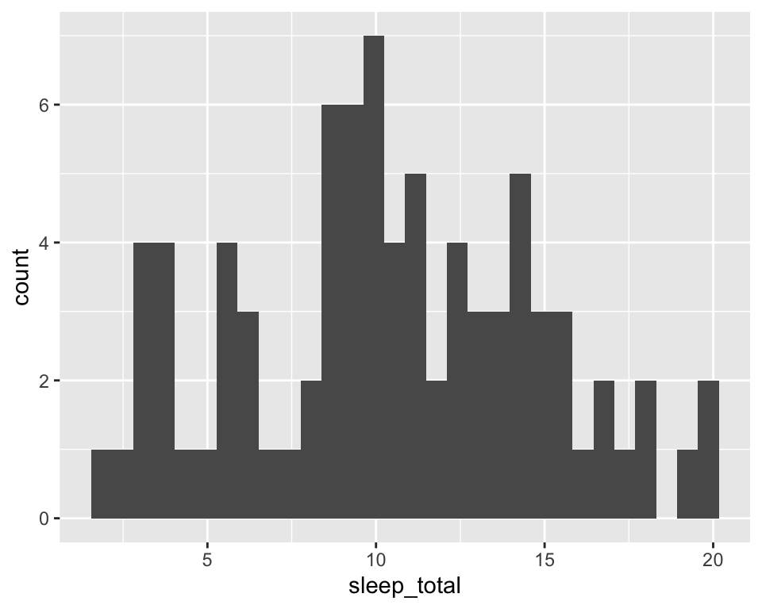
In some cases, you will not have the data on a tidy tibble and rather on a vector for example. For such cases, the structure would be slightly different. Check how you can plot the distribution of a random set of numbers.
rand.numbers = rnorm(100) # we will learn this function later on
ggplot() +
geom_histogram(aes(x = rand.numbers), # aes goes in the plot layer for histogram
bins = 50)
Try changing the option
bins. What do you see?
Boxplot
In this next example, we are creating a boxplot with the sleep time (total, in hours) for each dietary group (vore).
ggplot(msleep, # we use na.omit here to hide NAs from the plot
aes(x = vore,
y = sleep_total)) +
geom_boxplot()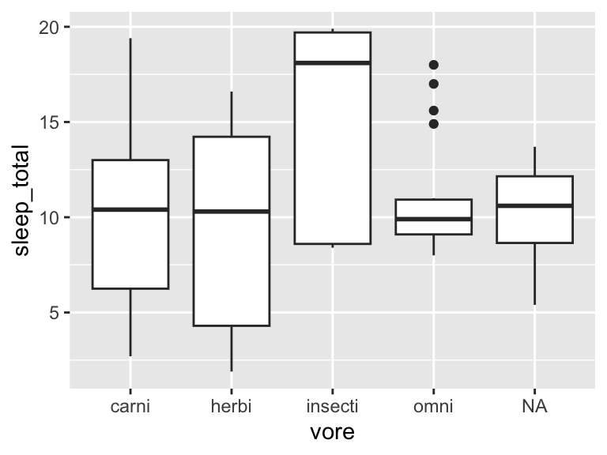
See the NA on the x-axis? In the course (week one) we will learn how to clean the data to avoid missing values like these ones.
Try some of the other geom_ layers available. As an example,
geom_violin()can be used in a similar way togeom_boxplot().
Common errors
Error in library(viridis) : there is no package called ‘viridis’:
Solution: install the required package using install.packages("package") and load it using library(package).
Error in gather : could not find function "gather":
Solution: load the package the function belongs to.
You can see it by running ??gather
Error in fortify(): ! data must be a <data.frame>, or an object coercible by fortify(), not a <uneval> object.:
Solution: aes() is within ggplot() when it should be on geom_...().
Introductory exercises
Exercise 1: Vectors
Create a vector named “test_scores” containing the test scores 75, 90, 65, 68 and 83 of students.
Create a vector “passing” that contains TRUE for test scores above 70 and FALSE for scores equal or below 70. Hint: Remember that you can perform tests on vector elements. Use
sum()to check how many students passed the test.(expert) Can you create a vector “high_scores” that contains only scores above 70, using the results obtained in 1. and 2.?
Exercise 2: Matrices
- Create a matrix that looks like this:
Select different parts of the matrix, for example:
- the element of the second row and first column
- the second and third element of the second column
- all elements of the last column
- Try something else!
Add a new column to the matrix using
cbind().Can you name the columns of the matrix as “A”, “B”, “C” and “D” using
colnames()?
Exercise 3: Data Frames
- Create a data frame from these vectors, with three columns and five rows:
Product_name <- c("orange", "strawberry", "broccoli", "blueberry", "cucumber")
Fruit <- c(TRUE, TRUE, FALSE, TRUE, FALSE)
Color <- c("orange", "red", "green", "blue", "green")Select the column “Fruit”. How many Fruits are there? Hint: Remember the function
sum().Add a column named “Berry” containing TRUE (for products that are berries) or FALSE to the data frame.
Lecture files
Week 1 - data analysis & statistics
Week 1 : data analysis
Day 1: Descriptive statistics and data types
Today, you will learn how to perform basic tasks on a dataframe/tibble, descriptive statistics, perform data cleaning, and plotting.
Data features and where to find them
Load the data
The diabetes dataset, which we will be using in this practical class will be downloaded from an online repository. We will load that into R and have a sneak peek into how it looks like with the console. In the following you will see several functions that give us information about our dataset.
dat = as_tibble(read.delim('https://tinyurl.com/y4fark9g')) # Load the dataset
head(dat, 10) # Look at the first 10 lines of the table## # A tibble: 10 × 19
## id chol stab.glu hdl ratio glyhb location age gender height weight
## <int> <int> <int> <int> <dbl> <dbl> <chr> <int> <chr> <int> <int>
## 1 1000 203 82 56 3.60 4.31 Buckingham 46 female 62 121
## 2 1001 165 97 24 6.90 4.44 Buckingham 29 female 64 218
## 3 1002 228 92 37 6.20 4.64 Buckingham 58 female 61 256
## 4 1003 78 93 12 6.5 4.63 Buckingham 67 male 67 119
## 5 1005 249 90 28 8.90 7.72 Buckingham 64 male 68 183
## 6 1008 248 94 69 3.60 4.81 Buckingham 34 male 71 190
## 7 1011 195 92 41 4.80 4.84 Buckingham 30 male 69 191
## 8 1015 227 75 44 5.20 3.94 Buckingham 37 male 59 170
## 9 1016 177 87 49 3.60 4.84 Buckingham 45 male 69 166
## 10 1022 263 89 40 6.60 5.78 Buckingham 55 female 63 202
## # ℹ 8 more variables: frame <chr>, bp.1s <int>, bp.1d <int>, bp.2s <int>,
## # bp.2d <int>, waist <int>, hip <int>, time.ppn <int>Dimensions and naming
1. What is the dimension of our dataset (i.e. how many rows/columns are there in our data)
## [1] 403 192. What are the column names of our dataset
## [1] "id" "chol" "stab.glu" "hdl" "ratio" "glyhb"
## [7] "location" "age" "gender" "height" "weight" "frame"
## [13] "bp.1s" "bp.1d" "bp.2s" "bp.2d" "waist" "hip"
## [19] "time.ppn"Probably you are confused about what these column names mean. For more description on these values look here
Numerical features
3. How do we extract the minimum and maximum age of patients in our dataset?
Can you find out the same for height and weight?
4. How does the overall summary of our entire dataset look like?
Can you explain what you see after you run the
summary()function?
Feel free to play around with this syntax until you feel comfortable with it.
You can open a window with View(dat) to compare your results.
Data cleaning
Very often the first thing one needs to do before any data science project is to clean up the raw data and transform it into a format that is readily understood and easy to use for all downstream analysis. This process usually involves: –
- Removing empty value rows/columns
- Removing unused or unnecessary rows/columns
- Reordering the data matrix
- Keeping columns uniformly numeric (age, weight etc) or string (names, places etc) or logical (TRUE/FALSE, 1/0)
- Handling strange caveats which are data specific like replacing
,or., or;from numbers etc
Lets do some clean up of our own diabetes data
- We will make the
idcolumn the row names for the dataset; - We will remove the
bp.2sandbp.2dcolumns as it has mostly missing values (see summary above); - We will also remove the column
time.ppnwhich will not be required in our analysis; - We will reorder the columns of the data such that all the qualitative and quantitative values are separated.
To perform this cleanup, we need a couple of important functions, that we will first discuss:
filteris.namutateacross%in%
filter()
filter() is used on a dataset to filter rows satisfying a condition you specify like we saw previously (Introduction).
Let’s look at an example. We are only filtering for senior individuals in our dataset.
We can also filter based on other conditions, like location, sex, among others.
In some cases, we can also use which() to filter values. The syntax is different…
… but it works for vectors and other classes. Let’s see the next example.
# number of animals you have
number = c(2,3,4,5,1,2,5)
# Let's create a different vector (of the same length)
animals = c("cat", "dog", "cow", "parrot", "zebra", "sparrow", "lizard")
# Let's use the "which()" function now
animals[which(number > 2)]## [1] "dog" "cow" "parrot" "lizard"We selected all animals from the “animals” vector that correspond to more than three individuals in the “number” vector.
is.na()
is.na() is used to determine if NA values are present in a given object. We can try a simple example with one variable being assigned as NA.
## [1] FALSE## [1] TRUEWe can do this with vectors obtained from dat. What class is the output in?
mutate()
mutate() is often used to create a new column based on another column of the dataframe. Let us use this function to mutate two new columns including the weight in kilograms and the height in centimeters. The conversion from pounds to kilograms can be done by multiplying weight in pounds by 0.454. To covert height to centimeters we only need to multiply height (inches) by 2.54.
dat %>%
mutate(weight.kg = weight * 0.454, # you can generate both columns using the same mutate!
height.cm = height * 2.54) %>% # we do not need to save this output
select(id, weight.kg, height.cm)## # A tibble: 403 × 3
## id weight.kg height.cm
## <int> <dbl> <dbl>
## 1 1000 54.9 157.
## 2 1001 99.0 163.
## 3 1002 116. 155.
## 4 1003 54.0 170.
## 5 1005 83.1 173.
## 6 1008 86.3 180.
## 7 1011 86.7 175.
## 8 1015 77.2 150.
## 9 1016 75.4 175.
## 10 1022 91.7 160.
## # ℹ 393 more rowsacross()
across() is very often used together with mutate() and another helper function, like everywhere(), starts_with(), ends_with(), or contains().
Later, we will use across() together with the other functions we learned previously to remove NAs like this:
There is much to unpack here:
rowwise()ensures that the next operations are applied by row.
mutate()adds a new column called na_count to the dataframe.
across(everything())selects all columns in the current row.
sum(is.na(...))calculates the sum of missing values for each row.
Try to run the previous example without
rowwise(). What does it look like?
%in%
This is an operator to check which elements of a first vector are inside a second vector.
## [1] TRUE TRUEReady for the cleaning!
The first column of the dataframe is the column with the name “id”.
The rows are just numbered, without names.
We are going to rename the rows using the column “id”. The function column_to_rownames() allows us to do this efficiently.
Keep in mind that rownames must be unique!
The na_count column will then include the number of NAs per row. Do you understand how it works?
We finally apply filter again to keep only rows with less than or 2 NAs.
dat = dat %>%
rowwise() %>%
mutate(na_count = sum(is.na(across(everything())))) %>%
filter(na_count <= 2)We will also remove the na_count and some problematic columns (bp.2s, bp.2d and time.ppn) by selecting the ones which are not these. We can do this using !, as this character can be used to invert results. Let us try it with select().
Next, we can re-order the remaining columns, in order to put the categorical columns first, and numerical columns after. We can use select to order columns too, but we need to combine it with where() and functions which verify the class of the columns, like is.character() or is.numeric().
Here is a simple example:
# Create a character and numeric
name = c("Antonia")
age = c(23)
# Verify if the previous object are from the character/numeric classes
is.character(name)
is.character(age)
is.numeric(age)And here we can apply the same principle to the re-ordering:
dat <- dat %>%
select(
# Select categorical columns
where(is.character),
# Select numerical columns
where(is.numeric)
)
# OR you can use the indexes too, but if you more than 10-20 columns, that is not ideal
# dat = dat[,c(8,6,11,9,10,14,15,2,5,1,3,4,12,13)]Now lets look at our cleaned data:
## location gender frame chol
## Length:377 Length:377 Length:377 Min. : 78.0
## Class :character Class :character Class :character 1st Qu.:179.0
## Mode :character Mode :character Mode :character Median :204.0
## Mean :208.2
## 3rd Qu.:230.0
## Max. :443.0
##
## stab.glu hdl ratio glyhb
## Min. : 48.0 Min. : 12.00 Min. : 1.500 Min. : 2.680
## 1st Qu.: 81.0 1st Qu.: 38.00 1st Qu.: 3.200 1st Qu.: 4.390
## Median : 90.0 Median : 46.00 Median : 4.200 Median : 4.860
## Mean :107.3 Mean : 50.36 Mean : 4.538 Mean : 5.594
## 3rd Qu.:108.0 3rd Qu.: 59.00 3rd Qu.: 5.400 3rd Qu.: 5.622
## Max. :385.0 Max. :120.00 Max. :19.300 Max. :16.110
## NA's :3
## age height weight bp.1s
## Min. :19.0 Min. :52.00 Min. : 99.0 Min. : 90.0
## 1st Qu.:34.0 1st Qu.:63.00 1st Qu.:151.0 1st Qu.:122.0
## Median :45.0 Median :66.00 Median :174.0 Median :136.0
## Mean :46.9 Mean :66.02 Mean :178.1 Mean :137.4
## 3rd Qu.:60.0 3rd Qu.:69.00 3rd Qu.:200.0 3rd Qu.:148.0
## Max. :92.0 Max. :76.00 Max. :325.0 Max. :250.0
##
## bp.1d waist hip
## Min. : 48.00 Min. :26.00 Min. :30.00
## 1st Qu.: 75.00 1st Qu.:33.00 1st Qu.:39.00
## Median : 82.00 Median :37.00 Median :42.00
## Mean : 83.69 Mean :37.95 Mean :43.08
## 3rd Qu.: 92.00 3rd Qu.:41.25 3rd Qu.:46.00
## Max. :124.00 Max. :56.00 Max. :64.00
## NA's :1 NA's :1Hold up, the ordering and selection of columns looks right, but it seems that there are certain rows that have missing values still (like glyhb column has 3 NA values still).
Lets remove all rows with any missing value using na.omit().
Remember, 1 row = 1 patient.
How many patients were removed because they were associated with missing values?
Now our cleaned data has no missing values, columns are cleanly ordered and each column is in the right format
## location gender frame chol
## Length:367 Length:367 Length:367 Min. : 78.0
## Class :character Class :character Class :character 1st Qu.:179.0
## Mode :character Mode :character Mode :character Median :204.0
## Mean :207.5
## 3rd Qu.:229.0
## Max. :443.0
## stab.glu hdl ratio glyhb
## Min. : 48.0 Min. : 12.00 Min. : 1.500 Min. : 2.680
## 1st Qu.: 81.0 1st Qu.: 38.00 1st Qu.: 3.200 1st Qu.: 4.390
## Median : 90.0 Median : 46.00 Median : 4.200 Median : 4.860
## Mean :107.3 Mean : 50.28 Mean : 4.536 Mean : 5.602
## 3rd Qu.:108.0 3rd Qu.: 59.00 3rd Qu.: 5.400 3rd Qu.: 5.630
## Max. :385.0 Max. :120.00 Max. :19.300 Max. :16.110
## age height weight bp.1s
## Min. :19.00 Min. :52.00 Min. : 99.0 Min. : 90.0
## 1st Qu.:34.00 1st Qu.:63.00 1st Qu.:151.0 1st Qu.:121.5
## Median :45.00 Median :66.00 Median :174.0 Median :136.0
## Mean :46.68 Mean :66.05 Mean :178.1 Mean :137.1
## 3rd Qu.:60.00 3rd Qu.:69.00 3rd Qu.:200.0 3rd Qu.:148.0
## Max. :92.00 Max. :76.00 Max. :325.0 Max. :250.0
## bp.1d waist hip
## Min. : 48.0 Min. :26.00 Min. :30.00
## 1st Qu.: 75.0 1st Qu.:33.00 1st Qu.:39.00
## Median : 82.0 Median :37.00 Median :42.00
## Mean : 83.4 Mean :37.93 Mean :43.04
## 3rd Qu.: 92.0 3rd Qu.:41.50 3rd Qu.:46.00
## Max. :124.0 Max. :56.00 Max. :64.00Can you identify which types of data (continuous, discrete etc) each column above represents and why?
Visualizing data distribution
In this section you will also learn the essential functions to plot data in an intuitive and useful way using the ggplot2 package, just like in the introductory section to tidyverse.
Histograms
We can plot the column “stab.glu” as a histogram using the hist() function:
ggplot(dat,
aes(x = stab.glu)) +
geom_histogram() +
labs(x = "Stabilized Glucose concentration in blood", # add labels to the x-axis
title = "Glucose concentration") # add title
Add the parameter
bins = 50in the above lines of code (insidegeom_histogram) and see what happens. Try different values forbinslike10, 20, 75, 100. Can you interpret the differences? Is this a good or bad thing about histograms?
Density plots
For density plots, we use the geom_density() function to estimate the probability density function for a given variable.
ggplot(dat,
aes(x = stab.glu)) +
geom_density() +
labs(x = "Stabilized Glucose concentration in blood", # add labels to the x-axis
title = "Glucose concentration") # add title
Boxplots
The boxplot() function produces a boxplot for a given variable:
ggplot(dat,
aes(x = stab.glu)) +
geom_boxplot() +
labs(x ="Stabilized Glucose concentration in blood")Can you explain all features of this graph, such as upper/lower whisker, 25% quantile, …?
QQ-plots
We can use QQ-plots to either (1) compare two distributions, or (2) compare a distribution with a theoretical distribution (typically the normal distribution).
We can for example compare the distribution of the blood pressure values to check if they are normally distributed
Now we can use the function geom_qq() to generate the QQ-plot of this distribution against the standard normal distribution:
ggplot(dat,
aes(sample = bp.1s)) + # we use sample= inside aes for the QQ-plot
geom_qq() # creates the QQ-plotUsing the additional command geom_qq_line(), we can add a straight line that goes through the first and third quartile:
ggplot(dat,
aes(sample = bp.1s)) + # we use sample= inside aes for the QQ-plot
geom_qq() +
geom_qq_line(colour = 'red') # adds in the QQ-line on topSo, is the distribution normal??
Now let’s compare the quantiles of the cholesterol values by biological sex.
Notes on ggplot() here: Rather than ggplot(dataset, aes(...)) we use ggplot() + geom_xx(aes(...)) for situations where the data we wish to plot is not in a dataframe.
# We can use "filter()" to filter the cholesterol values for men and women
dat.male = dat %>%
filter(gender == 'male')
dat.female = dat %>%
filter(gender == 'female')
# Compute the quantiles (note the "na.rm" option to ignore missing NA values!)
q.male = quantile(dat.male$bp.1s,
probs=seq(0,1,by=0.05),
na.rm=TRUE)
q.female = quantile(dat.female$bp.1s,
probs=seq(0,1,by=0.05),
na.rm=TRUE)
# Now plot against each other!
ggplot() +
geom_point(aes(x = q.male, y = q.female)) +
labs(title = "Quantiles", x = "Male quantiles", y = "Female quantiles")Correlation
Measuring the centrality in data
Before you begin, think back to the mean, median and quantiles we saw on the boxplot. Do you remember what these terms mean? How does an asymmetrical distribution influence mean and median?
We have already seen that the summary() and quantile() functions in R can compute the mean, median and quantiles of any given data.
Calculate the mean and median of other continuous numeric data in the diabetes dataset and measure the difference between them. (a) Why is there a difference between the mean and median? (b) Why do you think there are larger differences for some and almost no difference for others?
Association between variables
Often a common step during any data analysis project is to find associations between variables present in the dataset. Such associations helps us to decipher the underlying structure in the data.
For instance, in our diabetes dataset we would expect a high correlation between free blood glucose levels and glycosylated blood levels or between waist and hip sizes. One of the most common ways of measuring associations is correlations.
Let us start by producing a scatter plot between a pair of variables:
ggplot(dat,
aes(x = stab.glu, y = glyhb)) +
geom_point() +
labs(x='Stabilized glucose', y='Glycosylated hemoglobin')Do you suspect that the two variables have a relationship? Do the scatter plot for other pairs of numerical variables!
We now can compute the correlation of the two variables. We can compute the Pearson correlation or the Spearman correlation:
## [1] 0.7411355## [1] 0.5214866The Spearman correlation seems much lower, right? To understand why, we can do a scatter plot between the ranks of the two variables:
ggplot(dat,
aes(x = rank(stab.glu), y = rank(glyhb))) +
geom_point() +
labs(x='Rank - Stabilized glucose', y='Rank - Glycosylated hemoglobin')Do you understand the usage of ranks here? Run `rank()`` on a vector like c(3,5,10,1,23) to see how the output looks like.
Associations are among the simplest forms of structure in the data! It is important to remember that Association does not imply correlation and Correlation does not imply causation. Take a look at this page to view few common logical fallacies. see here
EXERCISES
Exercise 1: Data features
Try to obtain the same result of the
head()function by using slicing on the dataset “dat” using row indexes.Print out the last element in the last column of “dat” using the
dim()function instead of using numerals.
Exercise 2: Visualization and correlation
Visualize the cholesterol levels of all patients with a histogram using the
geom_histogram()function.Visualize the cholesterol levels of all male patients with a histogram using
geom_histogram(). (expert): Mark the median, first and third quartile with vertical lines usinggeom_vline(). The values are defined usingxintercept(as in which value of x should the vertical line intercept). Then mark median, first and third quantile for female patients in the same graph with a different color. What can you tell from the differences in these values?Is there an association between “hip” and “waist” on the data frame “dat”? Use the
geom_point()function to do a scatter plot of the values and of the ranks (as determined by therank()function). Compute both the Pearson and Spearman correlation values.
Going further (expert)
Select only the numerical columns (using
select(where(is.numeric))), and apply the functioncor()directly:%>% cor(). What happens? What is the output? Store the result of this command in a new variable named “all.cor”. Plot a heatmap of these results using thepheatmap()function from the “pheatmap” package. Remember that you first have to install and then activate this package usinglibrary("pheatmap").Find the highest and lowest Pearson correlation value of the result from exercise 2.2. To which pair of variables do they correspond? Plot the corresponding scatter plots using
geom_point()! Hint: Before finding the highest Pearson correlation value, use thediag()function to set all diagonal values (=1) of “all.cor” to NA.
Day 2: Dimensionality reduction and unsupervised learning
Preparing the data
Unsupervised clustering is one of the most basic data analysis techniques. It allows to identify groups (or clusters) or observations (here: patients) or variables. Unsupervised means that you are not using any prior knowledge about groups of variables or associations. K-means clustering is a good example of unsupervised learning because the method categorizes sample based uniquely on the data.
In this part, we will use a dataset of gene expression data from the TCGA (The Cancer Genome Atlas) project. This project has sequenced several thousand samples from cancer patients of more than 30 cancer types. We will use a subset of this data, containing 200 samples (=patients, as columns) , for which the expression of 300 genes (= rows) has been measured.
Load data
We will start by reading the gene expression data. The columns are the samples and the rows are the genes. This is matrix, which allows some numerical operations to be conducted directly.
brca.exp = readRDS(url('https://www.dropbox.com/s/qububmfvtv443mq/brca.exp.rds?dl=1'))
dim(brca.exp)## [1] 100 200WARNING: If you have problem loading the data, please download this file, store it on your disk, and open it with the following command:
#brca.exp = readRDS("xxxx") # xxxx should be replaced with the path to the downloaded file in your deviceNext we will load the clinical annotation file for this gene expression data and explore it
brca.anno = readRDS(url('https://www.dropbox.com/s/9xlivejqkj77llc/brca.anno.rds?dl=1'))
head(brca.anno)## Age ER_status HER2_status Classification
## TCGA-BH-A1EO-01 68 Positive Negative Luminal A
## TCGA-E2-A14N-01 37 Negative Negative Basal-like
## TCGA-AN-A0FF-01 32 Positive Negative Luminal B
## TCGA-A2-A04V-01 39 Positive Negative Luminal A
## TCGA-AN-A0XP-01 69 Positive Negative Luminal A
## TCGA-C8-A12U-01 46 Positive Negative Luminal BSame here: if you have issues running the previous readRDS command, download this file, save it on your disk and load it with
You can check the number of samples for each tumor type using the table() function, applied to a specific column (here, there is only one column…)
##
## Equivocal Negative Positive
## 4 174 22Data transformation
You will see that the distribution of the data is extremely squeezed due to outliers with very high or low values. We will need to make the data more homogeneous, so that our downstream analysis is not affected by these very large magnitude numbers.
We will carry out the following data processing steps. Some of these steps use rather arbitrary values, which come from visually inspecting the data!
Thresholding: cap the values to the 95th percentile
Homogenization: base-2 logarithmic transformation of the entire dataset
Scaling: standardize the data so that across genes the mean = 0 and variance = 1.
Before we start modifying the data, we will store the original data frame into a variable, so that in case of problems we can revert back to the initial data!!
Thresholding
## what is the value of the 95th percent percentile?
q95 = quantile(brca.exp,probs=0.95)
## set all values above to this value
brca.exp[brca.exp>q95] = q95Homogenization and Scaling
We will perform this step by log-transforming the data. We are able to use this operation because the data is still in a matrix.
Why do we add +1 ?
Next, we will scale the data and plot its distribution. To do this efficient, we need to convert the data to tibble first, make it tidy, and then plot.
Conversion to tibble can be done using as_tibble(brca.exp, rownames = NA), where rownames = NA is meant to keep the original rownames (in this case, gene names) in the new tibble, although they are invisible.
Check this out:
## [1] "TFF1" "C4orf7" "AGR3" "GABRP" "C1orf64"In addition, gather(key = "sample", value = "expression") converts the tibble to a long format, where “sample” represents the original column names, and “expression” represents the values present in the initial matrix.
## scaling
brca.exp = scale(brca.exp)
## plotting the density
as_tibble(brca.exp, rownames = NA) %>%
gather(key = "sample",
value = "expression") %>%
ggplot(aes(x = expression)) +
geom_histogram() +
labs(title = "Transformed data")
Compare to the density plot before these pre-processing steps using the same strategy.
as_tibble(brca.exp.original, rownames = NA) %>%
gather(key = "sample", value = "expression") %>%
ggplot(aes(x = expression)) +
geom_histogram() +
labs(title = "Untransformed data")
k-means clustering
Another widely used method for grouping observations is the k-means clustering. Now we will cluster our dataset using k-means and explore the underlying structure of the data. In this dataset, different clusters could represent different batches, different tumour subtypes, among other features.
Performing k-means
We use the function kmeans() in R on our matrix. You can check the options and usage in the help panel on the right. The parameter centers indicates how many clusters are requested.
What does the
tmean in the command?
Just type
kmin your console and check all results generated. Play around with thecentersparameter. See cluster assignments by typingtable(km$cluster)
Quality of the clustering
We can judge the quality of the clustering by computing the intra-cluster distances, i.e. the sum (squared) of all distances between pairs of objects belonging to the same cluster. This is called the within sum of squares (WSS). The better the clustering, the smaller WSS should be. However, it also automatically decreases with increasing k.
What would be WSS if we request a number of clusters equal to the number of data points? You can check what the WSS is for a particular clustering by typing
## [1] 4123.459run k-means for k=2 to k=7 clusters, and for each k check the WSS value. How does WSS evolve with increasing k?
We can also run a little loop to test different k. Loops are very important structures in any programming language. We can test a simple scenario before. Check how the output of this simple loop looks like.
## [1] 1
## [1] 2
## [1] 3
## [1] 4
## [1] 5
## [1] 6## [1] 2
## [1] 3
## [1] 4
## [1] 5
## [1] 6
## [1] 7Do you understand the difference between the 2 previous for loops? Try to make your own for loop.
Now we can make one to test k from 2 to 7:
km_wws = numeric() # we start by creating an empty vector
# To write in the position 1, we use i
# to find the 1st element, we use k_to_test[i]
for (i in 1:length(k_to_test)) {
km_wws[i] = kmeans(x=t(brca.exp),
centers = k_to_test[i])$tot.withinss
}
# We can plot the k against WSS using geom_line
ggplot() +
geom_line(aes(x = k_to_test, y = km_wws)) +
labs(x="Number of clusters K",
y="Total within-clusters sum of squares")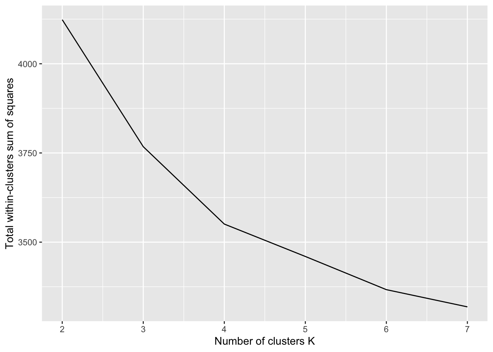
Do you see an obvious “elbow” or “kink” in the curve?? Another criteria for the quality of the clustering is the silhouette method.
To run the silhouette method, we need to compute the pairwise distances between all objects (i.e. patients) in the data matrix. This is done with the dist function, which can take different metrics (euclidean, …)
## compute the patient-patient distance matrix (this is why we transpose using the `t()` function)
D = dist(t(brca.exp))We now compute the silhouette for a specific k-means clustering:
##
## Attaching package: 'cluster'## The following object is masked _by_ '.GlobalEnv':
##
## animalskm = kmeans(x=t(brca.exp), centers = 3, nstart = 10)
s = silhouette(km$cluster,D)
# Let us use the basic R function plot() to see the results
plot(s)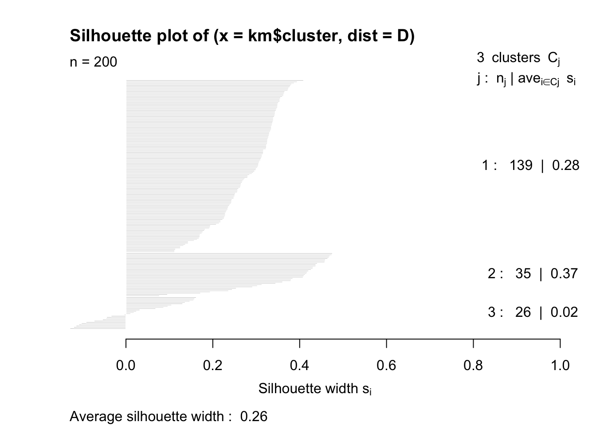
Run this for various values of k and compare the silhouette scores Compare to the Elbow method!
Hierarchical clustering
Clustering is a method by which we group together similar observations while separating out the dissimilar ones. We will cluster our samples from the cancer dataset to see which samples cluster together or separately. Hierarchical clustering does not generate discrete clusters of datapoints, but rather creates a dendrogram that indicates the magnitude of similitude between samples. Once again is up to the Data Scientist to decide the right amount of clusters.
Determine the most variable genes
When performing clustering, we usually reduce the number of genes used, as some of them are not informative. For example, genes that show a mostly constant expression across all samples will not be useful to distinguish the samples, right? One simple method is to select genes that show a high variance across all samples.
brca.exp.tibble = as_tibble(brca.exp, rownames=NA) %>%
rownames_to_column("gene")
## create a new column with the variance for all genes across all samples
brca.exp.var = brca.exp.tibble %>%
rowwise() %>%
mutate(variance = var(c_across(starts_with("TCGA"))))
# only includes the columns starting with TCGAWe now want to find the top 25% with the highest variance
## what is the 75% quantile of the variance?
q75 = quantile(brca.exp.var$variance, probs = 0.75)
q75## 75%
## 0.4934196So let us select all rows (genes) with a variance higher than or equal to q75:
## only select the genes with a variance in the top 25%
topVariantGenes <- brca.exp.var %>%
filter(variance >= q75)
print(topVariantGenes$gene)## [1] "TFF1" "C4orf7" "AGR3" "GABRP" "C1orf64" "TFF3"
## [7] "ABCC11" "PGR" "FABP7" "SERPINA11" "VGLL1" "A2ML1"
## [13] "ELF5" "PROM1" "CYP4Z2P" "SLC6A14" "CAPN8" "ABCC8"
## [19] "SYTL5" "SFRP1" "ART3" "GABBR2" "PPP1R14C" "HORMAD1"
## [25] "LOC84740"Computing the correlation between all patients
Let us start by filtering for only the highly variable genes. Then we can directly calculate Spearman correlation.
brca.exp.highvar.cor = brca.exp.tibble %>%
filter(gene %in% topVariantGenes$gene) %>% # from the whole list, select only high variable
select(where(is.numeric)) %>% # get only numerical columns
cor(method="spearman") # create correlation-based distance matrixIf we want to display the correlation matrix as a heatmap, we can use the pheatmap function as before:

Each cell of this heatmap represents the correlation value between the sample in the row and the sample in the column. The correlation of a sample to itself is always 1 (red diagonal).
The function automatically determines the clustering trees of the rows and columns (which are identical, since the correlation matrix is symmetrical!)
Including clinical annotations in the heatmap
This is a nice representation, but in order to interpret this clustering, we need to add some additional (clinical) information to interpret the clustering structure. To do this, we use an annotation data frame containing as columns a number of clinical features.
The clinical annotation is stored in the brca.anno data frame.
We can now plot again the heatmap, using the annotation dataframe to add additional information
pheatmap(brca.exp.highvar.cor,
annotation_row = brca.anno,
show_rownames = FALSE,
show_colnames = FALSE)How would you interpret this dendrogram? Do the clusters you observe make any sense? What are the parameters by which the samples cluster together? How many meaningful clusters can you observe? Do you see any relation between the distribution of the data and your clusters ?
The function
pheatmapaccepts a parameter clustering_method to indicate alternative linkage methods; try other linkage methods (check which are available with the pheatmap help page, which can be accessed by typing?pheatmapin the console!)
Principal component analysis
We will now use principal component analysis to explore the same dataset, and identify directions (i.e. principal components) with maximal variance. Principal components analysis finds n-dimensional vectors (Principal Components) in the direction of the largest variance, thereby allowing you to describe an n-dimensional dataset with just a few dimensions.
pca = topVariantGenes %>%
select(where(is.numeric)) %>%
t() %>% # do not forget to transpose the data!
prcomp(center = FALSE, scale = FALSE) # We set these as false as we have already scaled our data
summary(pca)## Importance of components:
## PC1 PC2 PC3 PC4 PC5 PC6 PC7
## Standard deviation 3.719 2.1886 0.89796 0.86195 0.69326 0.62793 0.61645
## Proportion of Variance 0.559 0.1936 0.03259 0.03003 0.01942 0.01593 0.01536
## Cumulative Proportion 0.559 0.7526 0.78514 0.81516 0.83458 0.85052 0.86588
## PC8 PC9 PC10 PC11 PC12 PC13 PC14
## Standard deviation 0.59717 0.55556 0.53665 0.52007 0.50060 0.4900 0.45974
## Proportion of Variance 0.01441 0.01247 0.01164 0.01093 0.01013 0.0097 0.00854
## Cumulative Proportion 0.88029 0.89276 0.90440 0.91533 0.92546 0.9352 0.94370
## PC15 PC16 PC17 PC18 PC19 PC20 PC21
## Standard deviation 0.44696 0.43284 0.4009 0.39542 0.38101 0.35781 0.34271
## Proportion of Variance 0.00807 0.00757 0.0065 0.00632 0.00587 0.00517 0.00475
## Cumulative Proportion 0.95178 0.95935 0.9658 0.97216 0.97803 0.98320 0.98795
## PC22 PC23 PC24 PC25
## Standard deviation 0.30347 0.28452 0.26505 0.23424
## Proportion of Variance 0.00372 0.00327 0.00284 0.00222
## Cumulative Proportion 0.99167 0.99494 0.99778 1.00000How many principal components do you obtain? Compare this to the dimension of the matrix using the
dim()function!
What would happen if you would not transpose the matrix with t(…) in the prcomp function?
Principal components are ranked by the amount of variance that they explain. This can be visualized using a scree plot, indicating how much variance each PC explains: the standard deviation explained by each principal component is contained in the pca$sdev vector:
## [1] 3.7190077 2.1886234 0.8979609 0.8619466 0.6932587 0.6279258 0.6164472
## [8] 0.5971745 0.5555603 0.5366514 0.5200662 0.5006037 0.4899632 0.4597383
## [15] 0.4469622 0.4328397 0.4008966 0.3954205 0.3810141 0.3578084 0.3427089
## [22] 0.3034732 0.2845180 0.2650462 0.2342352We see that the standard deviation is indeed going down! Let us now plot the proportion of total variance explained by each PC
variance = (pca$sdev)^2
prop.variance = variance/sum(variance)
names(prop.variance) = 1:length(prop.variance)
# We make a data.frame from the prop.variance and the PC it corresponds to
# we can obtain the PCs using names()
data.frame(proportion = prop.variance,
PCs = as.numeric(names(prop.variance))) %>%
ggplot(aes(x = PCs, y = proportion)) +
geom_col() + # to make the barplot
labs(y='Proportion of variance') # we only plot the first 20 PCs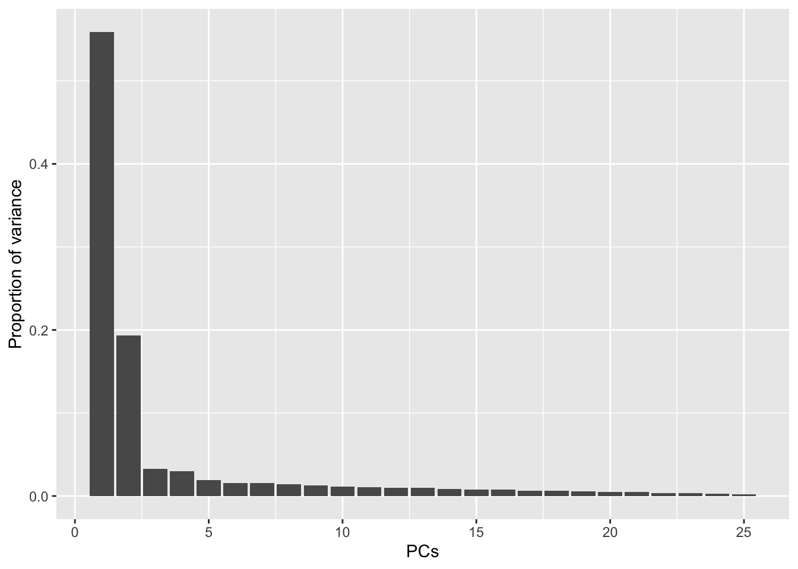
Principal component analysis represents each data point (here: patient) in a new space in which the coordinates are principal components. Check the following output:
We can now display the data points (i.e. patients) in the first two principal components. In addition, we can color the dots according to certain clinical parameters:
# We start by creating a dataframe and combining it with the annotation
pca_with_annot = as.data.frame(pca$x) %>%
merge(brca.anno, by = 0) # by = 0 makes use of the rownames as common information
## Now the object is in a ggplot2 friendly format
ggplot(pca_with_annot,
aes(x = PC1, y = PC2, colour = ER_status)) +
geom_point() +
scale_colour_manual(values = c("grey", "red", "navy")) # scale_colour_manual can be used to change colours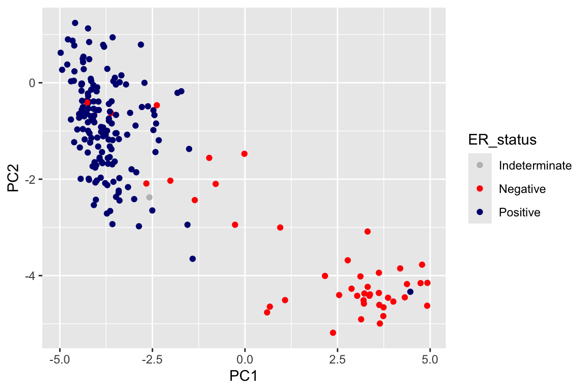
Choose different PCs for this plot. Can you still observe the two clusters corresponding to the ER_status of the patients?
EXERCISES
Exercise 1: Variance
For this exercise set it is given that all the data cleanup steps have been taken, you don’t need to put them in the results.
Make a heatmap of the reduced matrix “topVariantGenes” using the
pheatmap()function of thepheatmaplibrary (do not forget to select only for numerical columns). Check for parameters that might change the style of the heatmap (column names, row names, etc..). How is this heatmap different from the heatmap in section 2?Repeat the selection of top variable genes (apply the same quantile used to generate “topVariantGenes”), but using the median absolute deviation (or MAD) using the
mad()function instead of thesd()function, and store into asbrca.topMADExtract the gene names of
topVariantGenesandbrca.topMADand check how many overlap using theintersect()function.
Exercise 2: Hierarchical clustering
In section 2, we have computed a correlation matrix, and used this matrix to build a clustering tree.
Try different linkage methods using the clustering_method parameter to see if the topology of the dendrogram changes!
- Try building a distance matrix which would lead to different topologies of the dendrogram, depending on which linkage method is used! Show the dendrograms built with different linkage methods!
Exercise 3: PCA
Display the patients in the first two principal components (available in
pca_with_annot) usinggeom_point(). Color the patients in the PCA plot according toHER2_status.(optional) Color the patients in the PCA plot according to
Classification; you will probably need to define some more colors… You can check available colors here
Going further (expert)
Instead of performing the k-means on the whole gene expression matrix, we can run k-means on the space in which each patient is represented by the first k principal components.
Run k-means with different numbers of clusters (1-10) on the patients using the first 2, 4, 6,… principal components (i.e. the first columns of
pca_with_annot). Use the elbow method to evaluate how the within sum of squares (WSS) evolves. What is the optimal number of clusters?Represent the patients in the PCA plot as previously, but color them according to the cluster they belong to! Run kmeans with two clusters for this and merge the k-means results.
Day 3: Probability distributions
Probability distributions
In the previous Exercise Sheet we have learnt more about unsupervised learning, like hierarchical clustering and especially PCA. These are among the fundamental methods of Data Analysis. Today we will learn more about another milestone of statistics: probability distributions.
Distributions represented by sparse lines represent outcomes which will be discrete (for example the roll of dice will always have discrete integer values from 1 to 6). Distributions represented by dense lines represent outcomes which can be continuous i.e real numbers (for example the height of people living in Heidelberg).
R has in-built functions for almost all probability distributions
All of these functions for probability distributions follow the same common scheme, the root name of the function prefixed by either of p, d, q and r. For example for the Normal distribution we have the four variants of function available - pnorm, dnorm, qnorm and rnorm.
Here, you can find some specific help on these functions:
In the respective help documentation, you will find details on each of the functions.
Probably, the most difficult to distinguish or to remember are pnorm() and qnorm() (respectively ppois() and qpois(), etc …).
We are going to look at them more deeply in the following.
Getting to know the various functions
Let us get a grasp of what these functions actually do. You should be familiar with the cumulative distribution function, let’s take a look at that and its inverse first. We will work with a Normal distribution. We calculate the cumulative probability for the values 1,2,3,4 in three different distributions, using one of the functions described previously.
Short hint: p like cumulative P-robability. Which function are you going to use?
## [1] 0.1586553 0.5000000 0.8413447 0.9772499## [1] 0.3085375 0.5000000 0.6914625 0.8413447## [1] 0.001349898 0.022750132 0.158655254 0.500000000Do you understand why the cumulative distribution functions change the way they do?
Now, on the same distributions, we calculate the inverse cdf (inverse cumulative distribution function) for the cumulative probabilities of 25%, 50% and 75%. We use the qnorm() function for this (q- like quantile):
## [1] 1.32551 2.00000 2.67449## [1] 0.6510205 2.0000000 3.3489795## [1] 3.32551 4.00000 4.67449Try with 100% on any of the distributions. Can you explain this result? Do you expect the result to be different in the other ones?
Now that you know the output of the p- and q- functions, let’s look at d- like density probability functions. For any continuous distribution, the value of the function at any specific value is 0. This is why this probability function is used in discrete distribution such as the binomial distribution (function dbinom()). We first calculate the probability of getting 5 events out of 5 in a binomial distribution with a probability of 0.5. Then, we calculate the odds of not getting 5 out of 5.
# probability of 5 out of 5
dbinom(5, size=5, prob=0.5) # size = number of trials; prob = probability of success on each trial## [1] 0.03125## [1] 0.96875## [1] 0.96875What is the probability of getting 5 out of 10? And NOT getting 5 out of 10?
Suppose that the distribution of body height is described by a normal distribution with mean = 1.75 m and standard deviation sd = 0.15. What is the probability that someone is taller than 1.9 m? We can use the parameter lower.tail of the function pnorm() for this.
What is the probability that someone is smaller than 1.60m?
## [1] 0.1586553## [1] 0.1586553## [1] 0.1586553# equivalent to
pnorm(1.6, mean=1.75, sd=0.15) # lower.tail is set to TRUE by default (check the help page using `?pnorm`)## [1] 0.1586553Let’s have a look at this distribution using the dnorm() function:
x = seq(1, 2.5, by=0.01)
y = dnorm(x, mean=1.75, sd=0.15)
ggplot() +
geom_line(aes(x = x, y = y),
colour = "red", linewidth = 0.8) +
geom_vline(xintercept = c(1.6, 1.9),
linetype = 'dashed')
Let’s finally look at r- like random functions. These, unlike the others, don’t return single probabilities or values but rather generate a random distribution of values. We can use this to generate a normal distribution with mean = 10, sd = 5.
## normal distribution
x = rnorm(n=1000,mean=10,sd=5)
ggplot() +
geom_histogram(aes(x=x), bins = 20,
fill = "orange") +
labs(y = "Frequency") Can you generate a Poisson distribution and a binomial distribution?
Normal/Gaussian distribution
The normal or the Gaussian distribution is given as:
\[P(x) = \frac{1}{{\sigma \sqrt {2\pi } }} \cdot e ^ \frac{-(x- \mu)^2}{{2\sigma ^2 }} \] where \(\mu\) is the mean of the distribution and \(\sigma\) is the standard deviation.
The standard normal distribution is a special case of normal distribution where the values for \(\mu = 0\) and \(\sigma = 1\). Thus, the above equation for the Normal distribution simplifies to:
\[P(x) = \frac{1}{{\sqrt {2\pi } }} \cdot e ^ \frac{-x^2}{2} \] Now for any \(x\) we can easily solve this equation since \(\pi\) and \(e\) are known constants.
Visualization
Let’s generate three random normal distributions with different means and standard deviations and visualize them together
## Use the function `dnorm()` to plot the density distribution
x = seq(-10, 30, by=.1)
d1 = dnorm(x, mean=0, sd=1)
d2 = dnorm(x, mean=10, sd=1)
d3 = dnorm(x, mean=20, sd=1)
# Compare with the histogram build from 1000 random number drawn from the standard normal distribution
r1 = rnorm(n=1000, mean=0, sd =1) # random distributions of values
r2 = rnorm(n=1000, mean=10, sd=1)
r3 = rnorm(n=1000, mean=20, sd=1)
# Histogram visualization
# We will start by converting the rnorm outputs into one single df
data.frame(vals = c(r1, r2, r3), # column vals is actual numbers
Specs = c(rep("mean=0, sd=1", 1000), # column Specs is mean/sd
rep("mean=10, sd=1", 1000),
rep("mean=20, sd=1", 1000))
) %>%
ggplot(aes(x = vals,
colour = Specs)) +
geom_histogram(bins = 50) +
geom_freqpoly(bins = 50) # geom_freqpoly adds in the line on top of the histogram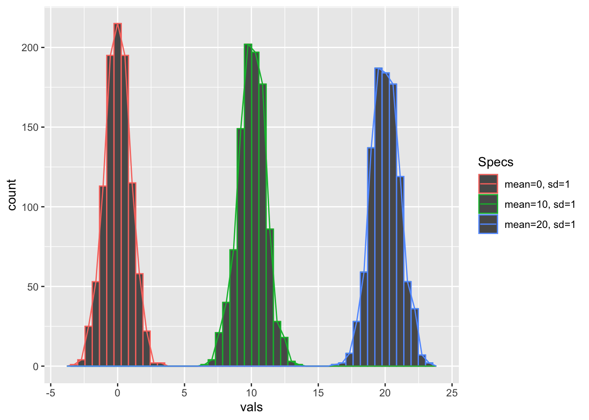
Play with the mean and sd parameters and visualize the distributions (plain lines) as well as the corresponding histograms.
Application on a real dataset
Now we will use the Normal distribution to make predictions about gene expression of TP53 in lung cancer. TP53 is the most commonly mutated gene across multiple cancer types especially in lung cancers. We will read a table (import) containing measurements of TP53 expression levels in 586 patients.
tp53.exp = read.table("https://www.dropbox.com/s/rwopdr8ycmdg8bd/TP53_expression_LungAdeno.txt?dl=1",
header=T, sep="\t")[,1:2]
summary(tp53.exp)## Samples TP53_expression
## Length:586 Min. : 92.6
## Class :character 1st Qu.: 911.8
## Mode :character Median :1313.3
## Mean :1380.8
## 3rd Qu.:1778.1
## Max. :4703.9
## NA's :69Data cleaning and central values
We will remove all the missing values and calculate the mean and standard deviation for the TP53 gene expression.
## [1] 1380.822## [1] 719.5934Modeling using a normal distribution
Let’s see how well a normal distribution with \(\mu = 1380.822\) (m.tp53) and \(\sigma = 719.5934\) (s.tp53) can approximate the real distribution of TP53 expression.
We assume that the population mean and standard deviation is similar as calculated above since we cannot measure the expression of TP53 in each and every lung cancer patient in the world.
# distribution of the measured data
ggplot(tp53.exp,
aes(x = TP53_expression)) +
geom_density() +
xlim(-1500, 6000)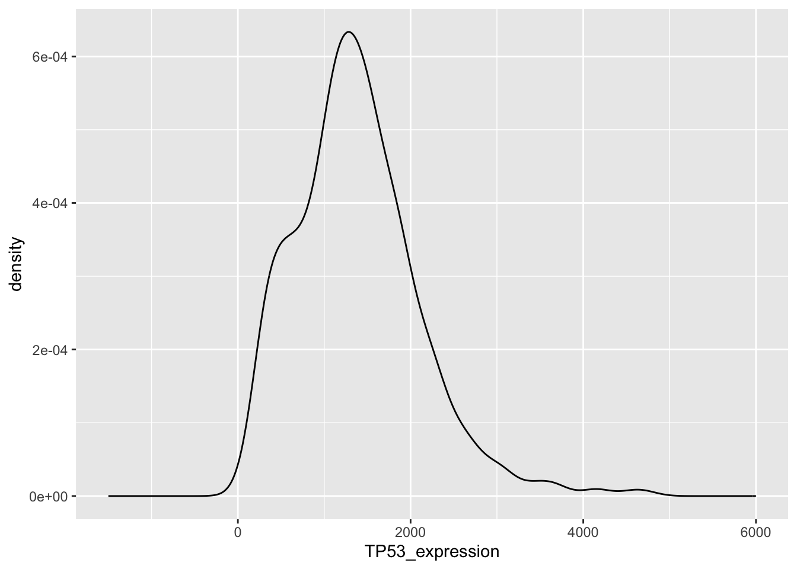
Make a normal distribution with the above parameters
x = seq(0,5000,by=5)
d.pred = dnorm(x, mean = m.tp53, sd = s.tp53)
# Now plot both, predicted and measured data
ggplot() +
geom_density(aes(x = tp53.exp$TP53_expression)) +
geom_line(aes(x = x,
y = d.pred),
colour = "red") +
geom_vline(xintercept = c(quantile(tp53.exp$TP53_expression, probs = c(0.1, 0.9)))) +
geom_vline(xintercept = c(qnorm(p = 0.1, mean = m.tp53, sd = s.tp53),
qnorm(p = 0.9, mean = m.tp53, sd = s.tp53)),
colour = 'red', linetype = 'dotted') 
Data prediction using the normal distribution model
Using a normal distribution with \(\mu = 1380.822\) (m.tp53) and \(\sigma = 719.5934\) (s.tp53), we will ask the following questions -
– (Q1) What is the probability of observing the expression of TP53 to be less than 1000?
## [1] 0.2983271– (Q2) What is the probability of observing the expression of TP53 to be greater than 1000?
## [1] 0.7016729# is same as
pnorm(q=1000, mean =m.tp53, sd = s.tp53, lower.tail = FALSE) # or pnorm(q=1000, mean =m.tp53, sd = s.tp53, lower.tail = F)## [1] 0.7016729Evaluating the quality of the predictions
Let’s check how good these predictions are compared to real data. – (Q1) What is the probability of observing the expression of TP53 to be less than 1000?
## [1] 0.2978723– (Q2) What is the probability of observing the expression of TP53 to be greater than 1000?
## [1] 0.7021277I would say those predictions are pretty good !! Now, let’s try to break this model. Re-execute the code above with different \(q\) values
q=100, q=500, q=4000, q=4500etc. At what values do you think the model would not perform well. HINT: Look at the tails of the distribution!
# What is the probability of observing the expression of TP53 to be less than q?
q = c(100,500,1000,4000,4500)
# for loop used to calculate and store the predicted (a) and real (b) values
pred = numeric()
meas = numeric()
for (i in 1:length(q)){
pred[i] = pnorm(q=q[i], mean = m.tp53, sd = s.tp53)
meas[i] = sum(tp53.exp$TP53_expression < q[i])/nrow(tp53.exp)
}
# Change into a dataframe
model_mat = data.frame(pred, meas, q)
model_mat## pred meas q
## 1 0.03754417 0.001934236 100
## 2 0.11046576 0.104448743 500
## 3 0.29832708 0.297872340 1000
## 4 0.99986358 0.992263056 4000
## 5 0.99999270 0.996131528 4500Again, using a normal distribution with \(\mu = 1380.822\) and \(\sigma = 719.5934\), what if we ask what is the value of TP53 expression at the 10% and 90% quantiles:
## [1] 458.6258## [1] 2303.018Let’s check how good these predictions are compared to our real data.
## 10% 90%
## 478.2844 2240.1913Again the predictions are pretty good!
Visualization
We can also visualize all of this on a simple graph:
# Model prediction:
x = seq(0,5000,by=5)
d.pred = dnorm(x,mean = m.tp53, sd = s.tp53)
# Model and measured data and predicted versus measured 0.1 and 0.9 quantiles:
ggplot() +
geom_line(aes(x = x,
y = d.pred),
colour = "red") +
geom_density(aes(x = tp53.exp$TP53_expression)) 
Compare the black and red vertical lines (real vs predicted).
Re-execute the code above with
p=0.25, p=0.5, p=0.75 etcand check how good the predictions are.
Visualization using a Q-Q plot
Now, let’s plot the sample quantiles against theoretical quantiles to check the similarity between the two. This is called a quantile - quantile plot or a Q-Q plot, which you are familiar with (see Exercises Sheet 1).
q = seq(0,1,0.01) # Creating a vector of quantiles
# Find values corresponding to these quantiles in the real data
q.observed = quantile(tp53.exp$TP53_expression, probs = q)
# Find values corresponding to these quantiles in the theoretical normal distribution
q.theoretical = qnorm(p = q, mean = m.tp53, sd = s.tp53)
# # Correlate the above two values
ggplot(tp53.exp,
aes(sample = TP53_expression)) +
geom_qq() +
geom_qq_line(colour = 'red')
## Would be the same as:
# ggplot() +
# geom_point(aes(x = q.theoretical,
# y = q.observed), size = 1) +
# geom_abline(intercept = 0, slope = 1,
# size = 1, color = "red") Binomial distribution
A binomial distribution can be defined as -
\[P(x) = \frac{n!}{x!(n-x)!}\cdot p^x \cdot (1-p)^{n-x}\]
Where \(x\) is the number of successes out of \(n\) experiments and \(p\) is the probability of success.
- \(mean = n \cdot p\)
- \(variance = np \cdot (1 - p)\)
- \(sd = \sqrt{np \cdot (1 - p)}\)
The design of the experiment is as follows -
- The experiment is repeated and are independent of one another
- Each experiment has just two outcomes
- The probability of success is constant and does not change with experiments
We can for example compute the probability of having 7 heads in a series of 10 throws of a coin:
# x = number of successes; size = number of trials; prob = probability of success on each trial
dbinom(x=7, size=10, prob = 0.5) ## [1] 0.1171875Or we can compute what the probability is to get 7 or more heads using the function pbinom(). Remember that the parameter “lower.tail” is used to specify whether to calculate the probability of observing x or fewer successes (if lower.tail = TRUE) or the probability of observing more than x successes (lower.tail = FALSE):
## [1] 0.171875Beware that this syntax means strictly more than 6, i.e. 7 or more!!
How would you compute the probability to get less than 5? What would
qbinom(0.3,size=10,prob=0.5,lower.tail=FALSE)represent?
Confidence interval
The confidence interval describes the interval containing the (unknown) expectation value of a distribution with 95% confidence. This means that out of 100 random realizations of this random variable, the true expectation value \(\mu\) will indeed be in this interval.
Let us try a simulation: we consider a random variable distributed according to a Poisson distribution \[P(x) = \frac{{e^{ - \lambda } \lambda ^x }}{{x!}}\] Here, we know the true value of the expectation value. We want to get an estimate for \(\lambda\), and check if the confidence interval contains the true expectation value.
For example, a farmer expects to collect 75 eggs from his hens per hour.
He now collects during 100 days the eggs \(N=8\) times a day (each time during one hour). We want to compute the mean \(m_N\) over these \(N=8\) realizations and determine the 95% confidence interval, and check, how often the expectation value \(\mu\) is inside the confidence interval.
Remember that the 95% CI is given by \[[m_N-t_{95,N-1}\frac{\sigma}{\sqrt{N}},m_N+t_{95,N-1}\frac{\sigma}{\sqrt{N}}]\] where \(t_{95,N-1}\) is the critical value for the \(t\)-distribution with \(n-1\) degrees of freedom.
Let’s start by creating our samples:
# size of the sample
N = 8
# we now draw 100 times samples of size N=8
## rpois is the function used to generate the Poisson distribution
X = lapply(1:100, function(i) {
rpois(N, lambda = lambda)
})lapply() is a function in R that stands for “list apply”. It is used to apply a function to each element of a list or vector and produces a list with the same length as an output.
In this previous example, the input is a vector (1:100).
Then, we lapply(v, function(i)):
+ v: The list or vector you want to apply the function to.
+ function: The function you want to apply where i is each element in X. In this case, we are applying rpois 100 times.
As an output, lapply returns a list where each element has had the specified function applied to it.
Run View(X) to see how this object looks like. Try using lapply to obtain the mean of all elements in each X using
lapply(X, function(i){mean(i)})orlapply(X, mean).
Now, we calculate the mean and the standard deviation of the respective samples:
# we compute the sample means
Xm = sapply(X,mean)
# and the sample standard deviations
Xsd = sapply(X,sd) Next, we determine the upper and lower bounds of the 95% CI. Remember that the confidence interval is based on a \(t\)-distribution. The degrees of freedom of this distribution is the sample size -1 (\(N\)-1=7 in this case)
df = N-1
tc = qt(c(0.975),df) # this is the critical value for the t-distribution for df = N-1 degrees of freedom and 95% CI
Xl = Xm-tc*Xsd/sqrt(N) # upper bound of the 95% CI
Xh = Xm+tc*Xsd/sqrt(N) # lower bound of the 95% CIFinally, we determine whether each sample mean is found within the 95% CI or not:
## vector of TRUE/FALSE if the real expectation value lambda is inside the interval
i.ok = as.factor(Xl < lambda & Xh > lambda)
plot_data <- data.frame(
n = 1:100,
Xm = Xm,
Xl = Xl,
Xh = Xh,
i.ok = i.ok
)
# Plot using ggplot2
ggplot(plot_data,
aes(x = n, y = Xm,
color = `i.ok`)) +
geom_point(size = 3) +
geom_errorbar(aes(ymin = Xl, ymax = Xh, color = i.ok), width = 0.2) +
geom_hline(yintercept = lambda, linetype = "dashed", color = "black") +
scale_color_manual(values = c("grey", "orange")) +
labs(y = "Mean values",
title = paste("Mean values and confidence intervals, N=",N),
color = "95% CI Status") 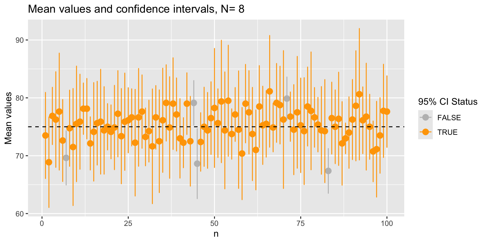
Here, the orange/grey bars represent the confidence interval, the dot is the mean of the sample values, and the dotted line at \lambda represents the true expectation value. Whenever the true expectation value is within the CI, the bar is orange, if not, the bar is grey. How often is the true expectation value outside the CI? Count the grey bars!
It happens 5 times, which fits pretty well with the expected 5%.
Repeat this simulation, but now with samples of \(N=24\) (again 100 times)
What do you observe?
How often is the true expectation value outside the CI? Change to 90% CI and check if that works!
EXERCISES
Exercise 1: Probability distributions
What is the expression of TP53 observed at 10th percentile? What is the expression of TP53 observed at 90th percentile?
(optional) Other distribution types can become very similar to the normal distribution under certain conditions. Plot the histogram of 1000 random numbers drawn from the Poisson distribution with lambda = 1, 10, 100, 1000. What do you observe?
Exercise 2: Confidence intervals
You are buying 10 packs of gummy bears. You particularly like the red ones and the green ones. A pack contains 6 different colors and you expect them to be equally distributed. There are 84 pieces per 200g pack.
What is the expected amount of red or green gummy bears?
You selected your 10 packs according to the colors you could see in the pack. At home, you counted the following bears per pack:
- for the red ones: 12 16 17 12 16 13 11 18 13 19
- for the green ones: 11 10 15 16 12 14 13 10 13 17
Was your selection procedure a success? In other words, is the expected value bellow (congrats!), within or above (bad luck!) the 95% CI?
Day 4: Hypothesis testing
On this section, we will go through hypothesis testing. You will start to see how to formulate hypotheses and how to test them. In addition, we want to learn how to use and interpret hypothesis tests.
We will work again with the diabetes dataset that we used previously.
dat = read.delim('https://tinyurl.com/y4fark9g')
# set the row names using the column id
rownames(dat) = dat$idLoad the required packages
Check out the content of the dataset using the summary function
## id chol stab.glu hdl
## Min. : 1000 Min. : 78.0 Min. : 48.0 Min. : 12.00
## 1st Qu.: 4792 1st Qu.:179.0 1st Qu.: 81.0 1st Qu.: 38.00
## Median :15766 Median :204.0 Median : 89.0 Median : 46.00
## Mean :15978 Mean :207.8 Mean :106.7 Mean : 50.45
## 3rd Qu.:20336 3rd Qu.:230.0 3rd Qu.:106.0 3rd Qu.: 59.00
## Max. :41756 Max. :443.0 Max. :385.0 Max. :120.00
## NA's :1 NA's :1
## ratio glyhb location age
## Min. : 1.500 Min. : 2.68 Length:403 Min. :19.00
## 1st Qu.: 3.200 1st Qu.: 4.38 Class :character 1st Qu.:34.00
## Median : 4.200 Median : 4.84 Mode :character Median :45.00
## Mean : 4.522 Mean : 5.59 Mean :46.85
## 3rd Qu.: 5.400 3rd Qu.: 5.60 3rd Qu.:60.00
## Max. :19.300 Max. :16.11 Max. :92.00
## NA's :1 NA's :13
## gender height weight frame
## Length:403 Min. :52.00 Min. : 99.0 Length:403
## Class :character 1st Qu.:63.00 1st Qu.:151.0 Class :character
## Mode :character Median :66.00 Median :172.5 Mode :character
## Mean :66.02 Mean :177.6
## 3rd Qu.:69.00 3rd Qu.:200.0
## Max. :76.00 Max. :325.0
## NA's :5 NA's :1
## bp.1s bp.1d bp.2s bp.2d
## Min. : 90.0 Min. : 48.00 Min. :110.0 Min. : 60.00
## 1st Qu.:121.2 1st Qu.: 75.00 1st Qu.:138.0 1st Qu.: 84.00
## Median :136.0 Median : 82.00 Median :149.0 Median : 92.00
## Mean :136.9 Mean : 83.32 Mean :152.4 Mean : 92.52
## 3rd Qu.:146.8 3rd Qu.: 90.00 3rd Qu.:161.0 3rd Qu.:100.00
## Max. :250.0 Max. :124.00 Max. :238.0 Max. :124.00
## NA's :5 NA's :5 NA's :262 NA's :262
## waist hip time.ppn
## Min. :26.0 Min. :30.00 Min. : 5.0
## 1st Qu.:33.0 1st Qu.:39.00 1st Qu.: 90.0
## Median :37.0 Median :42.00 Median : 240.0
## Mean :37.9 Mean :43.04 Mean : 341.2
## 3rd Qu.:41.0 3rd Qu.:46.00 3rd Qu.: 517.5
## Max. :56.0 Max. :64.00 Max. :1560.0
## NA's :2 NA's :2 NA's :3How can we inspect the differences between the weight of men and women? We can start by ploting two histograms or density plots representing the weight by biological sex.
The distributions look different in shape, right? Where do you think the mean would be located in the plot?
# We can use "filter()" to filter the cholesterol values for men and women
dat.male = dat %>%
filter(gender == 'male')
dat.female = dat %>%
filter(gender == 'female')
# we will calculate the mean weight by sex.
mean.men <- mean(dat.male$weight, na.rm = TRUE)
mean.women <- mean(dat.female$weight, na.rm = TRUE)And we can then add in the means to the plot as vertical lines.
ggplot(dat,
aes(x = weight,
fill = gender)) +
geom_density(alpha = 0.5) +
geom_vline(xintercept = mean.men, colour = "cyan") +
geom_vline(xintercept = mean.women, colour = "salmon")Do you think that the mean of the male weight is lower than 180? Do you think that the mean of the female weight is really different from the mean of the male weights? Do you think that the mean of the male weight is higher than that of the females?
Tests of mean
Now, we want to use a statistical test to check if,
- males have a mean weight that is significantly lower than a specific value (one-sample, one-tailed test)
- there is a significant difference in the mean of the weights between the two groups (two-sample, two-sided test)
- male have a significantly higher mean weight than females (two-sample, one-sided test)
Note the use of the word significant in the previous statements!
This is exactly what mean tests such as the t-test (or the Wilcoxon test) are designed for! We will perform here a t-test.
One sample t-test
Using a one-sample t-test, we can check if values differ significantly from a target value. For example, you could sample 10 chocolate bars, and test if they significantly differ from the expected weight of 100 g:
Should we perform a one- or two-sided test?
bars = c(103,103,97,102.5,100.5,103,101.3,99.5,101,104) # weights of 10 chocolate bars
chocbar.mean = 100 # expected weightThe function t.test() offers three alternative options: two.sided, less and greater.
Here, if we want to test whether the mean weight of the 10 chocolate bars is different from the expected weight of 100 g, we want to perform a two sided test and use the alternative two.sided.
It is essential to clearly formulate the H0 and H1 hypothesis. There are two alternative but equivalent ways to do so. Either:
- H0: the expectation value of the random variable “Weight of a chocolate bar” is equal to 100 g.
- H1: the expectation value of the random variable “Weight of a chocolate bar” is different from 100 g.
or
- H0: the mean weight of a chocolate bar is not significantly different from 100 g.
- H1: the mean weight of a chocolate bar is significantly different from 100 g.
Note the difference between these two formulations, and ask for help if you have questions about this!
##
## One Sample t-test
##
## data: bars
## t = 2.233, df = 9, p-value = 0.05244
## alternative hypothesis: true mean is not equal to 100
## 95 percent confidence interval:
## 99.98067 102.97933
## sample estimates:
## mean of x
## 101.48How would you interpret this result? Can you reject the H0 hypothesis?
Using \(\alpha=0.05\), the H0 hypothesis can not be rejected as the p-value is 0.05244 (p-value >= 0.05). With \(\alpha=0.05\), the mean weight of the chocolate bars is not significantly different from 100 g.
Using \(\alpha=0.1\), the H0 hypothesis can be rejected (p-value < 0.1). With \(\alpha=0.1\), the mean weight of the chocolate bars is significantly different from 100 g.
BUT … It does not mean that \(\alpha\) should be chosen with respect to the results of the t.test!!!
Before running a t.test, formulate the null hypothesis H0 and the alternative hypothesis H1 and decide about the alpha value. Remember, alpha represent the false positive rate: under the H0 hypothesis (test of two identical distributions), this is the proportion of tests that will detect a difference between the two groups (p-value < \(\alpha\)).
Beware not to get confused between one-/two-sample tests, and one-/two-sided tests!
Regarding the mean weight of the males, we would like to check whether males have a mean weight that is significantly lower than 180. Here as well, we will perform a one-sample test, with mu = 180. However, we will perform a one-sided test using the alternative option less.
The hypotheses can be formulated as:
H0: the expectation value of the random variable “Weight of male patients” is equal or greater 180.
H1: the expectation value of the random variable “Weight of male patients” is less than 180.
##
## One Sample t-test
##
## data: dat.male$weight
## t = 0.64094, df = 167, p-value = 0.7388
## alternative hypothesis: true mean is less than 180
## 95 percent confidence interval:
## -Inf 186.8629
## sample estimates:
## mean of x
## 181.9167How would you interpret the result with \(\alpha=0.05\)? Can you reject the H0 hypothesis?
Two-sample t-test (2-sided)
Now, we will compare the mean of the weights between males and females.
According to the previous histogram, females have a different mean weight as males. This can be tested using a two-sample and two.tailed t.test.
ggplot(dat,
aes(x = weight,
fill = gender)) +
geom_density(alpha = 0.5) +
geom_vline(xintercept = mean.men, colour = "cyan") +
geom_vline(xintercept = mean.women, colour = "salmon")
The hypotheses can be formulated as:
H0: the expectation value of the random variable “Weight of male patients” is equal to the expectation value of the random variable “Weight of female patients”.
H1: the expectation value of the random variable “Weight of male patients” is different from the expectation value of the random variable “Weight of female patients”.
##
## Welch Two Sample t-test
##
## data: dat.male$weight and dat.female$weight
## t = 1.8453, df = 372.45, p-value = 0.06579
## alternative hypothesis: true difference in means is not equal to 0
## 95 percent confidence interval:
## -0.4875828 15.3465572
## sample estimates:
## mean of x mean of y
## 181.9167 174.4872How would you interpret the result with \(\alpha=0.05\)? Can you reject the H0 hypothesis?
Two-sample t-test (1-sided)
Looking at the histogram, other observers could in principle see a difference between the mean values of the weights and formulate the following hypotheses:
H0: the expectation value of the random variable “Weight of male patients” is equal or lower to the expectation value of the random variable “Weight of female patients”.
H1: the expectation value of the random variable “Weight of male patients” is higher than the expectation value of the random variable “Weight of female patients”.
##
## Welch Two Sample t-test
##
## data: dat.male$weight and dat.female$weight
## t = 1.8453, df = 372.45, p-value = 0.0329
## alternative hypothesis: true difference in means is greater than 0
## 95 percent confidence interval:
## 0.7903498 Inf
## sample estimates:
## mean of x mean of y
## 181.9167 174.4872How would you interpret the result with \(\alpha=0.05\)?
Can you explain why the p-value of the one-tailed t.test is lower than the p-value of the two-tailed t.test? What is the relation between these two values?
# p-value of the two-sided t-test versus p-value of the one-sided t-test:
t.test(dat.male$weight,
dat.female$weight, alternative = "two.sided")$p.value # two-tailed## [1] 0.06579432## [1] 0.03289716This can be visualized using the t-distribution. Here (see above result of the t.test), t = 1.8453 and df = 372.45.
In the one-tailed t.test, the p-value is the area under the curve for t > 1.8453 (alternative greater) OR for t < -1.8453 (alternative less).
In the two-tailed t.test, the p-value is the area under the curve for t > 1.8453 (alternative greater) AND for t < -1.8453 (alternative less). It is two times the p-value of the one-sided t.test!

IMPORTANTLY, a t-test can only be performed if the data is normally distributed! If the data is not normally distributed, you will need to use a non-parametric test, like Wilcoxon test.
Wilcoxon test
What if the data is not normally distributed? In that case, we are not supposed to use the t-test for testing differences between mean values! Let us us see an example.
Let us start by loading the data.
all.aml = read.delim('http://bioinfo.ipmb.uni-heidelberg.de/crg/datascience3fs/practicals/data/all.aml.cleaned.csv',
header=TRUE)
all.aml.anno = read.delim("http://bioinfo.ipmb.uni-heidelberg.de/crg/datascience3fs/practicals/data/all.aml.anno.cleaned.csv",
header=TRUE) %>%
mutate(id = paste0("pat", Samples))We check whether the distribution of the expression values for the gene SOX4 corresponds to a normal distribution:
expression = all.aml %>%
t() %>%
as.data.frame() %>%
na.omit()
# Plot histogram
ggplot(expression,
aes(x = SOX4)) +
geom_histogram(bins = 20)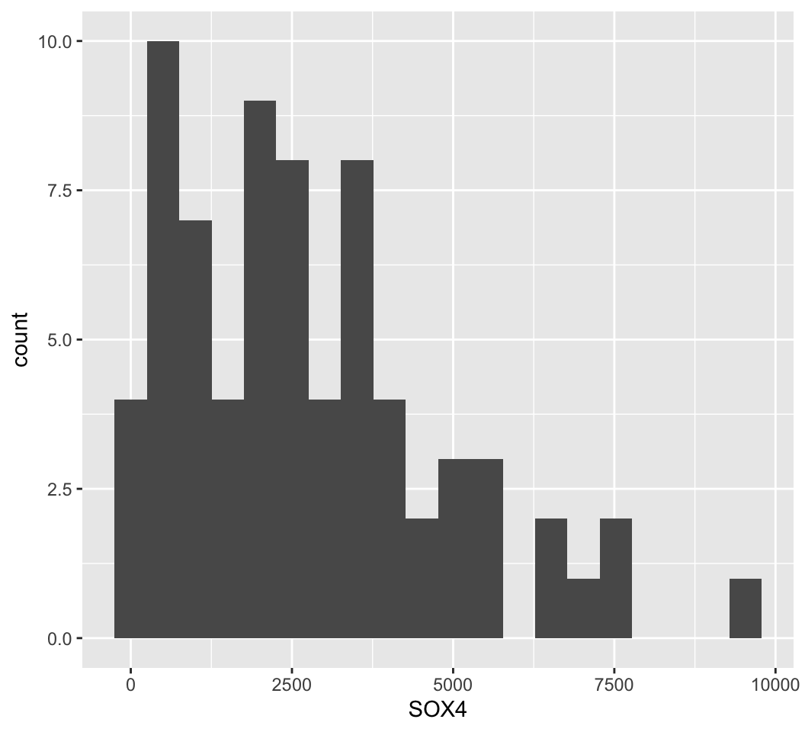
# Check if it's normally distributed using a QQ-plot
ggplot(expression,
aes(sample = SOX4)) +
geom_qq() +
geom_qq_line(colour = 'red')This looks everything but normal! In that case, we cannot apply the t.test, but need to apply a non-parametric test called the Wilcoxon test. This test is performed not on the values (like the t-test) but on the ranks of these values (remember the difference between the Pearson’s and the Spearman’s correlations!)
# divide the gene expression data in two groups according to ALL or AML patients:
# obtain the AML and rest
aml.patient.id = all.aml.anno %>%
filter(ALL.AML == "AML")
other.id = all.aml.anno %>%
filter(ALL.AML != "AML") # filters for those which are not labeled AML
gene.all = expression %>%
rownames_to_column("id") %>%
filter(id %in% other.id$id)
gene.aml = expression %>%
rownames_to_column("id") %>%
filter(id %in% aml.patient.id$id)
# test for a difference in the mean expression values using the Wilcoxon test:
wilcox.test(gene.aml$SOX4, gene.all$SOX4)##
## Wilcoxon rank sum test with continuity correction
##
## data: gene.aml$SOX4 and gene.all$SOX4
## W = 260.5, p-value = 0.0001125
## alternative hypothesis: true location shift is not equal to 0Compare the obtained p-value with the p-value obtained if we would have used the t-test:
##
## Welch Two Sample t-test
##
## data: gene.aml$SOX4 and gene.all$SOX4
## t = -3.6216, df = 54.611, p-value = 0.000642
## alternative hypothesis: true difference in means is not equal to 0
## 95 percent confidence interval:
## -2605.3197 -748.9356
## sample estimates:
## mean of x mean of y
## 1653.000 3330.128The p-values are very different!! So is the difference of expression between ALL and AML patients for this gene significant or not taking \(\alpha=0.05\)?
Here, we cannot trust the t-test due to the non-normality of the data! Hence, the correct p-value is the one from the Wilcoxon test.
Proportion tests
The t-test and Wilcoxon tests are tests of the mean, meaning that we are comparing the means of two samples and looking for significant differences.
But there are other hypothesis that one might want to test, related to the relationship between two categorical variables:
- is the proportion of men significantly higher in the patients from Louisa compared to the ones from Buckingham?
- is the proportion of smokers under 18 in Germany significantly higher than in other European countries?
The proportion test (Fisher Exact Test or chi-squared test) are used to investigate the relationship between 2 categorical variables, starting from a contingency table. We will use a dataset with clinical information about breast cancer patients.
dat.brca = read.delim('http://bioinfo.ipmb.uni-heidelberg.de/crg/datascience3fs/practicals/data/gbsg_ba_ca.dat',
stringsAsFactors = FALSE)Check which variables in this dataset are categorical/ordinal/numerical.
We can now check if there is a significant relationship between some variables.
For example, we can verify if the choice of treatment with tamoxifen (variable hormon) is related to the pre-/post-menopausal status (variable meno)
First, we can build the contingency table for these 2 variables:
##
## had tamoxifen no tamoxifen
## Postmenopausal 187 209
## premenopausal 59 231We can compute the odds-ratio (OR) for these two variables. This metric measures the strength of the association between two events, which in this case would be treatment with tamoxifen and menopausal status.
Here’s how to interpret the odds ratio (OR) value:
- OR = 1: events are independent
- OR > 1: events are positively correlated
- OR < 1: events are negatively correlated
## [1] 3.503122How would the odds-ratio look like if you would transpose the matrix?
Now we can run the one-sided Fisher Exact Test (FET). The H0/H1 hypothesis are:
- H0: the odds-ratio is not significantly larger than one
- H1: the odds-ratio is significantly larger than one
## build contingency table
tab = table(dat.brca$meno,dat.brca$hormon)
#
## run the FET
fisher.test(tab, alternative = 'greater')##
## Fisher's Exact Test for Count Data
##
## data: tab
## p-value = 1.388e-13
## alternative hypothesis: true odds ratio is greater than 1
## 95 percent confidence interval:
## 2.580638 Inf
## sample estimates:
## odds ratio
## 3.496639Check if your computation of the odds-ratio is right! Compute also the two-sided test:
Formulate the H0/H1 hypothesis!
##
## Fisher's Exact Test for Count Data
##
## data: tab
## p-value = 2.475e-13
## alternative hypothesis: true odds ratio is not equal to 1
## 95 percent confidence interval:
## 2.444410 5.049548
## sample estimates:
## odds ratio
## 3.496639We can also use the chi-square test to answer the same question. The Chi-square test compares the observed number of occurrences in the contingency table to the expected number of occurrences if there was no relationship between the variables.
- H0: the observed and expected occurrences are not significantly different
- H1: the observed and expected occurrences are significantly different
##
## Pearson's Chi-squared test with Yates' continuity correction
##
## data: tab
## X-squared = 51.416, df = 1, p-value = 7.473e-13Now we want to verify the impact of age on the grade of the tumor. We categorize the patients in under and over 40 year groups, and perform a chi-squared test:
## contingency table
tab = table(dat.brca$age>40,
dat.brca$grade)
tab # tumor grades 1,2,3; age under 40 (FALSE) and over 40 (TRUE)##
## 1 2 3
## FALSE 6 41 26
## TRUE 75 403 135##
## Pearson's Chi-squared test
##
## data: tab
## X-squared = 6.9515, df = 2, p-value = 0.03094We can determine the table of expected counts using the apply() function.
This works similarly to the lapply, but it can be used to apply a function by rows (if 1), columns (if 2), or both:
tot = apply(tab,2,sum) # this is the total number of occurrences in the 3 categories of "grade", independently of "age"
tot## 1 2 3
## 81 444 161age = apply(tab,1,sum) # this is the total number of persons above/below 40, independently of "grade"
age## FALSE TRUE
## 73 613On the other hand, sapply is commonly used for dataframe or other tabular formats:
tot.proportions = tot/sum(tot) # HO proportions (the proportions of occurrences in the three categories of grade, independently of age)
tab.exp = sapply(tot.proportions,function(x) {x*age}) # expected counts under H0
tab.exp## 1 2 3
## FALSE 8.619534 47.24781 17.13265
## TRUE 72.380466 396.75219 143.86735How would you compute the chi-square test statistic using the
tabandtab.exptables?
EXERCISES
Exercise 1: One-sided t-test
- Consider the following graph, formulate the hypotheses H0 and H1 and perform a (one-sided) t-test. Interpret the result using \(\alpha=0.05\).
- Calculate the mean age of the men.
- Compare it to age = 50. Formulate the hypotheses H0 and H1 and perform a (one-sided) t-test. Interpret the result using \(\alpha=0.05\).
Exercice 2: Two-sided t-test
Can you find interesting differences in the mean values of parameters of the dataset dat for the two groups defined by the location? Follow these steps:
Select the two groups according to the location. To do so, check the result of
distinct(location)and create two tibbles corresponding to each of possible the locations.Calculate the mean values of the numerical parameters for each group (ex: age, height, weight, waist, hip, …). Hint: create first a dataframe with numeric columns only (use
select(which(is.numerical))). Select the rows corresponding to the two groups and use ansummarise()andgroup_byloop to calculate the mean values (grouped by location).Select one of these, formulate the H0 and H1 hypotheses and perform a (two-sided) t-test. Interpret the result (\(\alpha=0.05\)).
Exercise 3: Mean and proportion testing
What test would you use for the following questions?
- A lotion company has to figure out whether their last product is more likely to give acne to men rather than women.
- The department of education wants to find out whether social science students have higher grades than science students.
- A biologist needs to find out whether a specific gene is more likely to be silenced in lactose intolerant people.
Going further: Checking the normality of the distribution
In principle, t-tests require that the data is approximately normally distributed. If not, we can use non-parametric tests (see next lecture).
In order to check whether the data is normally distributed or not, it is possible to perform a Shapiro-Wilk normality test (see lecture).
This statistical test is implemented in R in the function shapiro.test(). Try it out with any of the datasets we used before.
A p-value inferior to the chosen \(\alpha\) level here (we will use 0.05), means that the null hypothesis can be rejected. Therefore, the data distribution tested is not normal and you need to use a non-parametric test.
Day 5: Multiple testing and regression
Multiple testing
In the previous examples we were only testing for one single hypothesis. However, it is common in biology that we have more than one hypothesis being tested.
The table below is a reminder of which errors can be made when testing hypotheses:
| H0 is true | H0 is false | |
|---|---|---|
| Decision: Reject H0 | Type I Error | Correct Decision |
| Decision: Do not reject H0 | Correct Decision | Type II Error |
Decision is associated with \(\alpha\), so if the p-value is under 0.05, we reject the null hypothesis. However, when testing multiple hypothesis, we are prone to erroneously rejecting the 1st, 2nd… or Nth null hypothesis. I.e., if we test 1000 hypotheses simultaneously, we expect to erroneously reject 50 (5%) just by chance!
The family wise error rate (FWER) is the probability of making at least one Type I error and we can control this probability using a p-value correction.
Example
Imagine that you are trying to test the effect of a treatment A on a cell line in the lab. You run a gene expression experiment to compare treatment with control (untreated) for a panel of 20 genes you pre-selected.
The comparison between treatment and control for the panel gives you a set p-values of the 20 genes
p.vals = c(0.1, 0.0001, 0.04, 1.2e-20, 0.002, 0.01, 0.5, 1, 0.02, 1.9e-5,
1.1e-6, 0.03, 0.7, 0.06, 0.01, 0.3, 0.05, 1e-13, 0.032, 0.004)But since you ran 20 different tests to generate these, there is a need to correct the p-values. You can do this on the p-values directly using the p.adjust() function. Run ?p.adjust() to see which methods can be used.
We will use the false discovery rate (FDR) correction on this example.
## [1] 1.250000e-01 4.000000e-04 6.153846e-02 2.400000e-19 6.666667e-03
## [6] 2.222222e-02 5.555556e-01 1.000000e+00 4.000000e-02 9.500000e-05
## [11] 7.333333e-06 5.333333e-02 7.368421e-01 8.000000e-02 2.222222e-02
## [16] 3.529412e-01 7.142857e-02 1.000000e-12 5.333333e-02 1.142857e-02Check how the p-values change!
How many genes change from being significant to non-significant? How does this impact your experiment?
Regression
In this last part, we want to learn how to build a regression model in order to make predictions on certain quantitative variables using other quantitative variables. The important steps here are:
- learning the model
- testing the model to evaluate its performances, and also check that the assumptions of the linearity are given
- predict values based on new data points
We will use again the diabetes data set, and build a simple linear regression models with a single explanatory variable. We will focus on predicting the cholesterol level.
Load the data and perform some basic inspection on the data:
tmp = read.table('https://www.dropbox.com/s/zviurze7c85quyw/diabetes_full.csv?dl=1',header=TRUE,sep="\t") We will limit the dataset to the numerical variables
## id chol stab.glu hdl ratio glyhb age height weight bp.1s bp.1d bp.2s bp.2d
## 1 1000 203 82 56 3.6 4.31 46 62 121 118 59 NA NA
## 2 1001 165 97 24 6.9 4.44 29 64 218 112 68 NA NA
## 3 1002 228 92 37 6.2 4.64 58 61 256 190 92 185 92
## 4 1003 78 93 12 6.5 4.63 67 67 119 110 50 NA NA
## 5 1005 249 90 28 8.9 7.72 64 68 183 138 80 NA NA
## 6 1008 248 94 69 3.6 4.81 34 71 190 132 86 NA NA
## waist hip time.ppn
## 1 29 38 720
## 2 46 48 360
## 3 49 57 180
## 4 33 38 480
## 5 44 41 300
## 6 36 42 195First, we have to do some data cleaning and remove all patients with at least 1 “NA”. Use na.omit().
Then, we can make a heatmap and visualize the correlation values between each of the variables in the dataset.
library(pheatmap)
cor.vals = cor(dat, method = "spearman")
pheatmap(cor.vals,
cluster_cols = FALSE,
cluster_rows = FALSE,
display_numbers = TRUE)What are the strongest correlations? Do they make sense?
Apart from displaying the raw correlation values, we can test if any of those are statistically significant, i.e. if they are significantly positive (one-sided test), negative (one-sided test), or non zero (two-sided test). To do so, we will use cor.test function.
For example, there seems to be a positive correlation between stabilized glucose (stab.glu) and hip circumference (hip).
## [1] 0.03528725##
## Pearson's product-moment correlation
##
## data: dat$stab.glu and dat$hip
## t = 0.40873, df = 134, p-value = 0.6834
## alternative hypothesis: true correlation is not equal to 0
## 95 percent confidence interval:
## -0.1338406 0.2024178
## sample estimates:
## cor
## 0.03528725Read carefully this output, and make sure you understand it. Check other pairs!
Univariate linear regression
Next, we will assess what is the most promising variable to predict cholesterol level. Go back to the correlation heatmap to see if there are variables highly correlated with it.
We will use glycosilated hemoglobin (glyhb) as a predictor of the cholesterol level and the function lm().
##
## Call:
## lm(formula = chol ~ glyhb, data = dat)
##
## Residuals:
## Min 1Q Median 3Q Max
## -84.458 -32.011 -7.436 20.584 156.407
##
## Coefficients:
## Estimate Std. Error t value Pr(>|t|)
## (Intercept) 169.514 9.774 17.343 < 2e-16 ***
## glyhb 8.182 1.517 5.393 3.04e-07 ***
## ---
## Signif. codes: 0 '***' 0.001 '**' 0.01 '*' 0.05 '.' 0.1 ' ' 1
##
## Residual standard error: 44.02 on 134 degrees of freedom
## Multiple R-squared: 0.1783, Adjusted R-squared: 0.1722
## F-statistic: 29.08 on 1 and 134 DF, p-value: 3.045e-07For a simple linear regression (with only one explanatory variable), the p-value of the t-test for the slope is identical with the p-value of the F-test for the global model. This will no longer be the case when including several explanatory variables!
By the way, have we checked that a linear regression makes sense in this case? Remember that we have to check that:
- the residuals are normally distributed
- there is no correlation between the residuals and the explanatory variable
ggplot() +
geom_qq(aes(sample = l.g$residuals)) +
geom_qq_line(aes(sample = l.g$residuals),
colour = 'red')## correlation residuals x-values?
corr.gly_resi = cor(dat$glyhb,l.g$residuals)
ggplot() +
geom_point(aes(x = dat$glyhb, y = l.g$residuals))What is your overall opinion about the validity of the regression model here?
We can now use the model to predict the cholesterol values, and compare them to the real cholesterol values, since we have the information in this dataset.
ggplot() +
geom_point(aes(x = dat$chol,
y = l.g$fitted.values),
colour = "navy") +
labs(x = 'Real values',
y = 'Predicted values') +
geom_abline(intercept = 0, slope = 1,
color = 'red')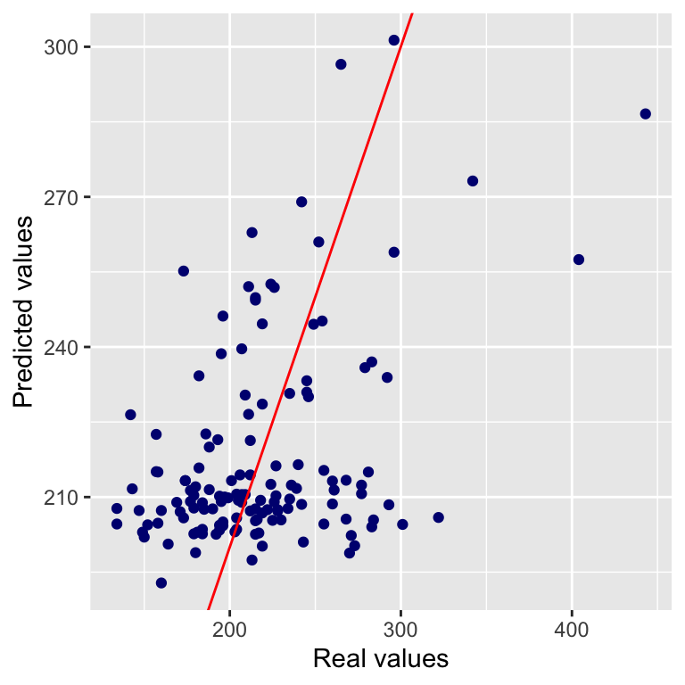
Not really super convincing, right? Let’s put more information into the model!
Multiple regression model
Let us include all the information to try to predict cholesterol level:
##
## Call:
## lm(formula = chol ~ ., data = dat)
##
## Residuals:
## Min 1Q Median 3Q Max
## -77.81 -10.15 -0.88 10.96 55.28
##
## Coefficients:
## Estimate Std. Error t value Pr(>|t|)
## (Intercept) 2.662e+01 5.724e+01 0.465 0.6428
## id -2.722e-05 1.410e-04 -0.193 0.8472
## stab.glu 6.908e-02 5.848e-02 1.181 0.2398
## hdl 2.249e+00 1.500e-01 14.988 <2e-16 ***
## ratio 2.520e+01 1.354e+00 18.611 <2e-16 ***
## glyhb 4.451e-01 1.491e+00 0.299 0.7658
## age 1.566e-01 1.654e-01 0.947 0.3457
## height -1.294e+00 6.645e-01 -1.947 0.0539 .
## weight -6.610e-02 1.284e-01 -0.515 0.6077
## bp.1s 9.021e-02 2.053e-01 0.440 0.6611
## bp.1d -1.778e-01 2.945e-01 -0.604 0.5472
## bp.2s -1.940e-01 2.004e-01 -0.968 0.3350
## bp.2d 5.934e-01 2.983e-01 1.989 0.0490 *
## waist 1.013e+00 7.203e-01 1.406 0.1623
## hip -5.150e-01 8.398e-01 -0.613 0.5409
## time.ppn -9.561e-03 7.239e-03 -1.321 0.1891
## ---
## Signif. codes: 0 '***' 0.001 '**' 0.01 '*' 0.05 '.' 0.1 ' ' 1
##
## Residual standard error: 21.78 on 120 degrees of freedom
## Multiple R-squared: 0.8199, Adjusted R-squared: 0.7974
## F-statistic: 36.42 on 15 and 120 DF, p-value: < 2.2e-16Do you note something unexpected in this report?
We can see that the inclusion of several explanatory variables improves the regression. Check the \(R^2\) values for example!
We can see that the variables weight, waist and hip do not reach the significance level. Two explanations are possible
- either these variables are indeed non-informative regarding the prediction of the cholesterol level
- or the mutual correlation between these 3 variables interferes with the model.
We can remove waist and hip for example, and redo the regression
l.less = lm(chol ~ stab.glu + hdl + glyhb + age + height + weight + bp.1s + bp.1d,data=dat)
summary(l.less)##
## Call:
## lm(formula = chol ~ stab.glu + hdl + glyhb + age + height + weight +
## bp.1s + bp.1d, data = dat)
##
## Residuals:
## Min 1Q Median 3Q Max
## -71.763 -29.004 -7.782 26.894 166.868
##
## Coefficients:
## Estimate Std. Error t value Pr(>|t|)
## (Intercept) 137.126166 75.534099 1.815 0.071819 .
## stab.glu -0.055663 0.109905 -0.506 0.613406
## hdl 0.607084 0.227293 2.671 0.008555 **
## glyhb 9.914922 2.634210 3.764 0.000254 ***
## age 0.242536 0.312447 0.776 0.439046
## height -0.632074 0.985494 -0.641 0.522433
## weight -0.058539 0.100419 -0.583 0.560962
## bp.1s 0.007349 0.215115 0.034 0.972801
## bp.1d 0.387031 0.373868 1.035 0.302539
## ---
## Signif. codes: 0 '***' 0.001 '**' 0.01 '*' 0.05 '.' 0.1 ' ' 1
##
## Residual standard error: 42.44 on 127 degrees of freedom
## Multiple R-squared: 0.2759, Adjusted R-squared: 0.2303
## F-statistic: 6.049 on 8 and 127 DF, p-value: 1.39e-06We can see how the weight variable seems indeed to contribute to the prediction of the cholesterol. The removal of the strongly correlated variables has increased its significance. It now almost reaches significance at the 5% level!
Check the result of the F-test to compare both models!
We can now check if the prediction are better that with the univariate model
ggplot() +
geom_point(aes(x = dat$chol,
y = l.less$fitted.values),
colour = "navy") +
labs(x = 'Real values',
y = 'Predicted values') +
geom_abline(intercept = 0, slope = 1,
color = 'red')Better? I would say so… To determine the accuracy, we can compute the so called root mean squared error (RMSE):
\[ RMSE = \sqrt{\frac{1}{n}\sum_{i=1}^n (x_i-\hat{x_i})^2} \]
## [1] 41.01479Of course, this is cheating, right? We are predicting the values on exactly the same data we used to learn the model. In real machine learning, we need to perform cross-validation, i.e. learn the model on one part of the data (training set) and validate it on another set (test set).
Let us split the dataset in a test and training set randomly:
set.seed(1234)
## take 200 random patients to form the training set
i.train = sample(1:nrow(dat),100)
##
dat.train = dat[i.train,]
dat.test = dat[-i.train,]We now learn a new model on the train dataset:
l.train = lm(chol ~ stab.glu + hdl + glyhb + age + height + weight + bp.1s + bp.1d,data=dat.train)
summary(l.train)##
## Call:
## lm(formula = chol ~ stab.glu + hdl + glyhb + age + height + weight +
## bp.1s + bp.1d, data = dat.train)
##
## Residuals:
## Min 1Q Median 3Q Max
## -76.806 -28.259 -6.705 22.934 158.094
##
## Coefficients:
## Estimate Std. Error t value Pr(>|t|)
## (Intercept) 214.29240 95.18482 2.251 0.02677 *
## stab.glu -0.04772 0.13938 -0.342 0.73288
## hdl 0.24900 0.31841 0.782 0.43624
## glyhb 10.14338 3.22686 3.143 0.00225 **
## age 0.41957 0.39691 1.057 0.29327
## height -1.11670 1.26775 -0.881 0.38072
## weight -0.11006 0.12823 -0.858 0.39298
## bp.1s -0.12595 0.28635 -0.440 0.66110
## bp.1d 0.31732 0.50740 0.625 0.53328
## ---
## Signif. codes: 0 '***' 0.001 '**' 0.01 '*' 0.05 '.' 0.1 ' ' 1
##
## Residual standard error: 46 on 91 degrees of freedom
## Multiple R-squared: 0.2749, Adjusted R-squared: 0.2111
## F-statistic: 4.312 on 8 and 91 DF, p-value: 0.0001965We can compute the RMSE for the training dataset
## [1] 43.88137Let use use that model to predict cholesterol values for the left out test set
and compute the rmse:
n.test = nrow(dat.test)
residuals = dat.test$chol - pred
rmse.test = sqrt(1/n.test*sum(residuals^2))
rmse.test## [1] 34.75285Of course, the RMSE is higher on the test dataset, since this does not include the data used for the establishment of the regression model; however, this is a more realistic estimation of the validity of the model, as it indicates how well the model could be extended to novel, independent data!
An important topic here is feature selection, i.e. finding the optimal and minimal set of explanatory variables that allow to predict well the output variable.
We now repeat the train/test split 10 times with each time a different random split; plot the 10 rmse.train and rmse.test values!
set.seed(345)
RMSE <- sapply(1:10, function(x) {
i.train = sample (1:nrow(dat),100)
##
dat.train = dat[i.train,]
dat.test = dat[-i.train,]
##
l.train = lm(chol ~ stab.glu + hdl + glyhb + age + height + weight + bp.1s + bp.1d,data=dat.train)
##
n.train = nrow(dat.train)
rmse.train = sqrt(1/n.train*sum(l.train$residuals^2))
##
pred = predict(l.train,newdata = dat.test)
##
n.test = nrow(dat.test)
residuals = dat.test$chol - pred
rmse.test = sqrt(1/n.test*sum(residuals^2))
RMSE <- c(rmse.train,rmse.test)
RMSE
})
#
ggplot() +
geom_point(aes(y = RMSE[1,],
x = 1:10, colour = "gold")) +
geom_point(aes(y = RMSE[2,],
x = 1:10, colour = "steelblue")) +
scale_x_continuous(breaks=c(2,4,6,8,10)) +
geom_hline(yintercept = mean(RMSE[1,]),
colour = "gold") +
ylim(min(RMSE), max(RMSE +2)) +
geom_hline(yintercept = mean(RMSE[2,]),
colour = "steelblue") +
scale_colour_manual(name = "RMSE", guide = 'legend',
values =c('gold'='gold','steelblue'='steelblue'),
labels = c('train','test')) +
labs(x = "Iteration", y = "RMSE values")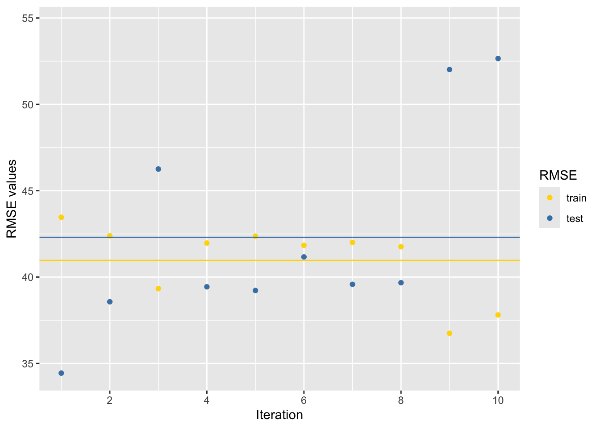
Week 2 : sequence analysis
Day 1: Annotathon! Identifying ORFs
The Annotathon project aims to give the students the opportunity to learn how to annotate unidentified sequences while helping the scientific community. In this course, the results you will produce will help progress on the discovery of new species or advance knowledge on known ones.
Each group will be affected an unknown sequence of DNA. Your mission, if you accept it, is to analyse this sequence and to gather the maximum of information you can on it.
Which means that there is no already known answer for the questions you will have. Each of you will follow the same bioinformatic process but the results will be uniq to the sequence.
Getting ready
Creating an account
To create you account on https://annotathon.org/, clic on the “New account” tab
 Follow the instructions to open a new account; make sure you select the appropriate Team
Follow the instructions to open a new account; make sure you select the appropriate Team
 And the correct “Team code”
And the correct “Team code”
GKBIOINFO2024
You are required to enter at least one firstname/lastname pair, and one email address in order to receive Annotathon specific notifications. Your email address is secure and will under no circumstance be made public or passed on to any third party. Only low traffic messages specific to your course duration will be mailed to this address; no further messages will be sent after the course is completed.
Finally a clic on “Open account” should be followed by the message “Account ‘XYZ’ has been created”. Use your ‘username’ and ‘password’ and clic “Connect” in the form at top of page to open an Annotathon session. You will be reminded that your email address is not validated until you have followed the special link included in an email automatically sent to you at account creation.

Getting started
Getting the sequence
The first step is to get your sequence. To do that, go to “Cart”, select the sample and clic “Add a new sequence to your cart”.

You now have your sequence and should be on a page with a lot of informations about your sequence. (This is the new look of your “Cart” page)

- In this example, GOS_11742010.1 is the name of the sequence i am analysing.
- In the “Actions” section, the eye is to view the state of your annotation, the notebook is to change the annotation
- the “version” is to go back to a previous save of your annotation
- the “Message” section is to send messages to me in case you have questions
- “Genomic Sequence” is to get your actual sequence in a FASTA format
- …
And now what ??
Well, now it is time to dive into the world of sequence annotation. You will follow a protocol described in the next chapter. For each step you will have to fill a report directly on the website. To start editing the report, clic on the notebook.

Every step of the analysis will be written following the same pattern :
Protocol : Describe what tool is used, how it is used …
Results Analysis: your observations
Raw results: output of the tool used
Finding ORFs
Steps to find the Open Reading Frame (ORF)
copy your fasta sequence
 go to : https://www.ncbi.nlm.nih.gov/orffinder/
go to : https://www.ncbi.nlm.nih.gov/orffinder/
Paste your sequence and choose the parameters (do not forget to note the selected parameters to your report).
For this study, you will only consider ORFs that verify the following criteria:
- do not contain any STOP codons (basic ORF definition…)
- contains at least 60 codons
- can be on either direct or reverse strands
- can be in frames 1, 2 or 3 on each strand
- can be complete or incomplete at the 5’ or 3’ ends, or both!
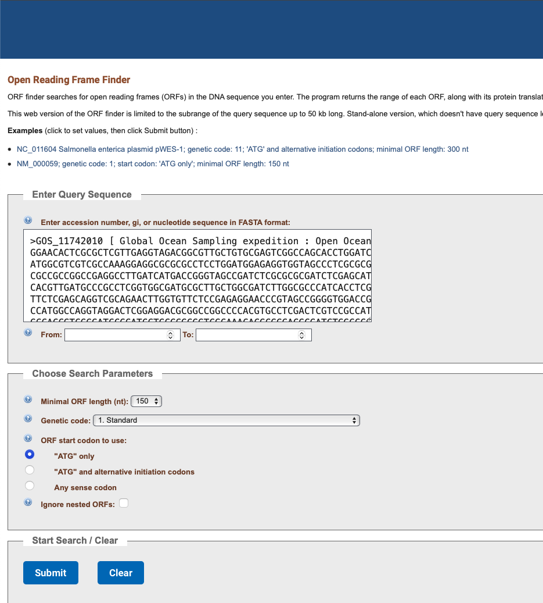 Then clic on submit and you will have your first output for your sequence, congratulations !!
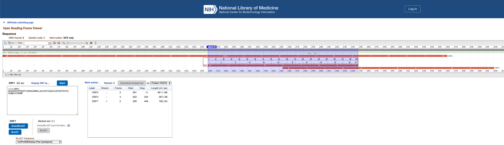 Now you can gather all of your ORFs sequences into your report (FASTA format) on the Annotathon website (only the ones that are more than 60 aa).
This should be your first entry to the annotathon report page, so it is time to talk about one really important thing here to avoid frustration : REMEMBER TO SAVE YOUR WORK !!!!!! To do that, you clic on the “save your annotations” button on the top of the page.
Gather informations about all the ORFs in a table like this one :

then, make a representation of the ORFs on a schematic figure :

If you do have multiple ORFs, just arbitrary select the biggest one. If you want more details on this part, you can refer to the rule book, but here we will skip the classification of each ORF part.
You now have one ORF that you will annotate deeply, do remember to keep the sequence of the ORF on your report and to save your work.
Conserved protein domains
Your new mission is now to find if your ORF contains any known domains (comparison to databases) go to https://www.ebi.ac.uk/jdispatcher/pfa/iprscan5
Copy paste your sequence, keep all the databases selected, put a name for the run and clic on submit. After 2 - 5 minutes you will obtain your results. (you need to use the protein sequence here)
Then copy the raw output to your report and make a table with the informations as described here:
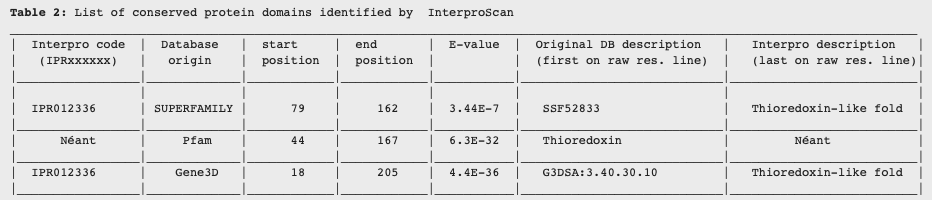
then analyse your results following the next guidelines :
1. Selected domains (if present)
- Which domains predictions do you select to annotate the ORF? Specifiy their sizes, E-value! Justify your selection!
- Refer clearly to Table 2 for your detailled analysis.2. Rejected domains (if present)
- Why are some functional domains rejected? (high E-value? No IPR domains?)Here you have to make choices based on the output of interproscan and other ressources you could find on the internet. Do remember to cite any exterior tool and also to save your work.
Day 2: Annotathon! Alignments
BLAST homolog search
BLAST is a well known tool to identify homologs of sequences. To use it, first go here : https://blast.ncbi.nlm.nih.gov/Blast.cgi?PROGRAM=blastp&PAGE_TYPE=BlastSearch&LINK_LOC=blasthome Here, since we already have the protein sequence we will use the BLASTp (protein BLAST).
The BLAST will be done twice, once against the NR database
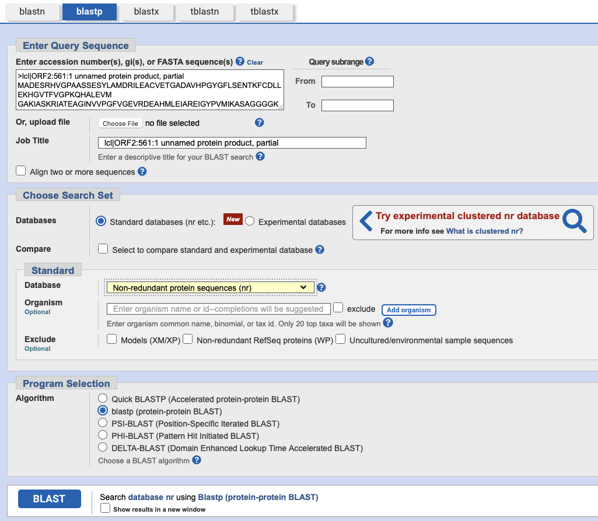 and once against the swissprot database (just change the database in the yellow part). Remember to copy the raw results for both and to note the informations to create this table :
 Then, using the raw results and this tool : https://annotathon.org/outils/blast_definition_list.php
create a definition list.
Then, using the raw results and this tool : https://annotathon.org/outils/blast_definition_list.php
create a definition list.
 look at your list and merge the similar categories into a table in your results with this format :
look at your list and merge the similar categories into a table in your results with this format :
 Then, take time to discuss your analysis following those guidelines:
Then, take time to discuss your analysis following those guidelines:
RESULTS ANALYSIS Do not continue the analysis of the fragment if:
- No homologs (or very small number of homologs in NR database, ie <100)
- Your gene is already present in the NR biological database (nucleotide BLASTn with ID > 95%)
Proposed structure of your analysis section:
1. Overview of the alignments
- Synthetic description of your alignment results (number, known functions, quality of the alignments, …)
- Give details on E-value range, % identity/similarity range, what about indels, alignment coverage, ….)
2. Identification of protein homologs
- Justify E-value thresholds (NR & SP) (Evalue cutoffs, changes in putative homolog functions), refer to tables 3 & 4.
3. Function of homologs from SWISSPROT analysis
- From SP entries, give details on closest homolog functions, specific role of important amino acids involved in catalytic function, cross your analysis with protein domain analysis. In all cases, cite your sources with web links.
BLAST Taxonomic report
Using the output of your BLAST analysis you will now be able to construct a taxonomic report. To do that, go to this website https://annotathon.org/outils/blast_tax_report2.php , and copy your BLAST hits.
 Hit the Taxonomy Report button. Copy the output to your report. Then, use this second tool : https://annotathon.org/outils/blast_taxonomy_list.php to produce a summary table.
Hit the Taxonomy Report button. Copy the output to your report. Then, use this second tool : https://annotathon.org/outils/blast_taxonomy_list.php to produce a summary table.
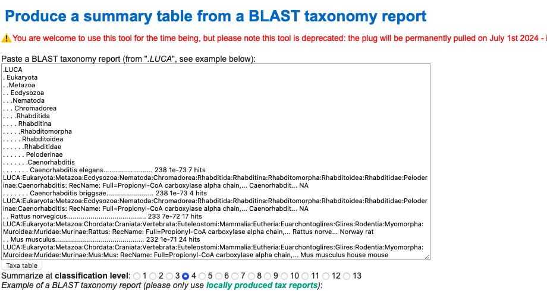 hit the Taxa table button and you will get a summary table like this :
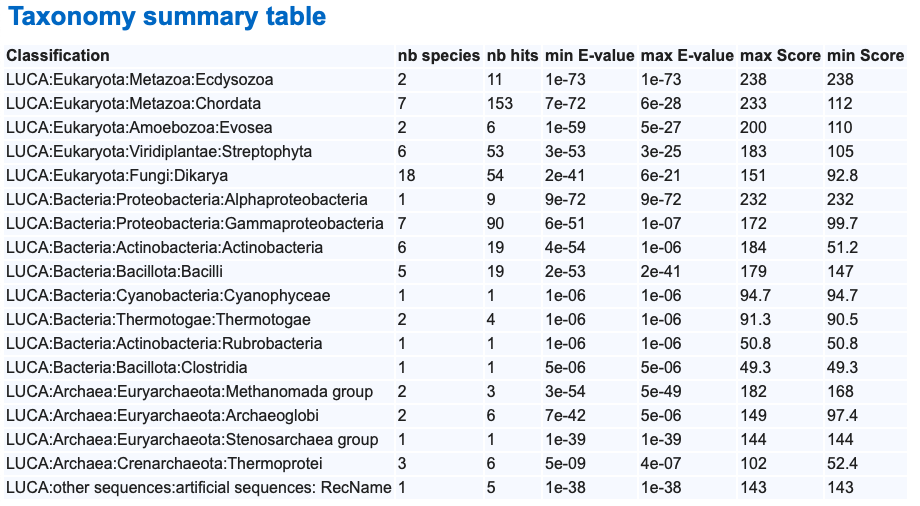
you can change the classification level parameter to have a more precise prediction
Selecting sequences for multiple alignment
Now, using the previous results, you will create two groups of sequences :
The study group (20 - 30 sequences) is composed with sequences of the same taxonomic group than your ORF and with a good E-value (the lowest possible).
The external group (10 - 15 sequences) with the closest homologs outside of the taxonomic group of your ORF (Lowest e-value here too)
keep the amino acide sequences in a FASTA format.
Day 3: Annotathon! Phylogenetic trees and conclusion
Multiple alignments
Now that you have your list of sequences you can go to this website to do a multiple sequence alignment : http://www.phylogeny.fr/simple_phylogeny.cgi?workflow_id=b02e40313c3ca8c0e3d4dbc97db10078&tab_index=2
Copy paste your sequences here :
 and clic submit.
and clic submit.
The limitation in the number of sequences to align is simply due to computation time of multiple alignment programs, as well as subsequent phylogenetic tree reconstruction. Computation time is reasonable up to around thirty or fifty sequences of a few hundred residues.
Copy & paste the “ClustalW” formated multiple alignment in the ‘Multiple Alignement’ Annotathon field.
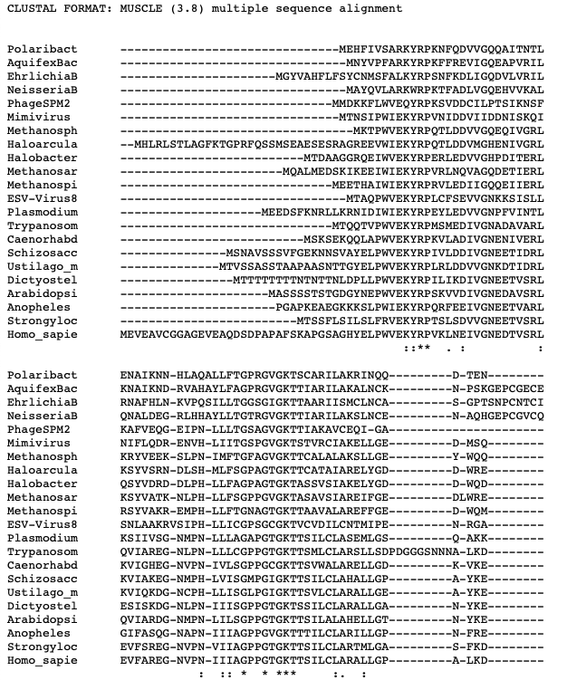 RESULTS ANALYSIS: 1. Quality of the multiple alignment
- Can you confirm that that sequences are really homologs? Similar lengths? How many identical positions? How many conservative substitutions positions? Number of indels? can you find that the conservation of sequences within alignment reflects the subgroups (In and out groups)?
- After curation with GBLOCKS, what is the number of conserved homolog positions (informative sites) for phylogenetic reconstruction? It is enough?
2. Identification of conserved blocks
- You can annotate well conserved blocks in your alignment with codes (such as A, B, C etc.) and refer to them in your analysis.
- Are there any conserved amino acids that are known as actives sites for this protein family? If yes, position in alignment, function, activity?
3. N and C-termini of the studied ORF
- Analysis of the N-ter/C-term of the alignment (complete? start codon? potentially missing number of amino acids in N and C-termini?)
Phylogeny
To construct the phylogenic tree : Use the previous multiple alignment to infer a phylogenetic tree using two distinct tree reconstruction approaches:
- ‘distance’ method (e.g. ‘neighbor-joining (NJ)’, ‘BioNJ’ or ‘Phylip protdist/neighbor’)
- ‘maximun likelyhood’ method (e.g. ‘PhyML)’)
Go to this place : http://www.phylogeny.fr/alacarte.cgi
 Once you have the two versions for the report, you can play with the different parameters to see how the results are impacted.
Once you have the two versions for the report, you can play with the different parameters to see how the results are impacted.
Then use this tool : https://annotathon.org/outils/nw_utils.php to create a tree to the format expected for your report. (copy the NEWICK format of your tree and paste it in the box)

Your result should look like this : 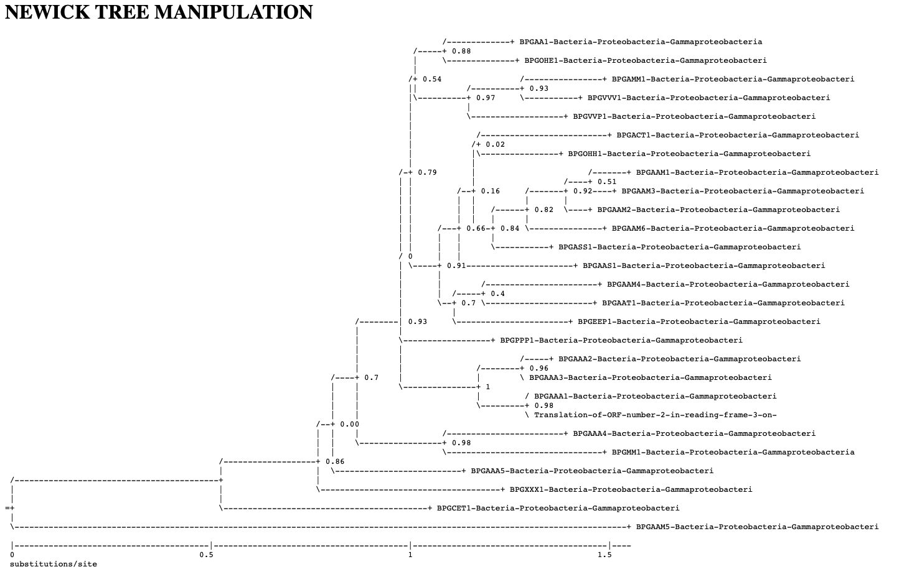
Copy & paste the textual tree representation in the ‘Tree’ Annotathon field. Remember to include a protocol line in the ‘Tree’ field that includes the program name and run parameters (ex ‘Phylip / Protdist+neighbor / Randomized input - Random number seed = 11 / rooted on: Coccidioides immitis (ascomycetes)’).
**Suggested plan for the analysis section:
1. Tree topologies
- Describe the topology of each tree. What are the monophyletic groups?
- Do the two independant trees describe the same evolutionary history? the same topology? Similar or different clades?
- Identify the commonalities as well as the potential incoherencies.2. Coherence with reference trees
- Are the in- and out-groups correctly separated?
- Are your gene trees coherent with the reference species trees ("tree of life")?
- Identify each discrepancy with the reference species tree, and suggest some explanations (HGTs, gene duplications...).3. Predict the most likely taxonomic origin of the metagenomic ORF
- In which monophyletic clade does the the metagenomic sequence seem to emerge?
- Propose a hypothetical taxonomic classification for the metagenomic ORF!
- Provide detailed justification of your hypothesis, do not under/over interpret the infered phylogenetic trees!After you have analysed the phylogenetic tree produced, specify the most likely taxonomic group (e.g. “Alphaproteobacteria”) to which belongs the organism carrying your DNA fragment. To specify this group in the ‘Taxonomy’ Annotathon field you have two options:
- specify in the ‘NCBI numerical identifier’ box the taxonomic group code (for instance 204455 for Rhodobacterales, these codes are found in GENBANK records in the feature table, such as /db_xref=“taxon:204455” or can be found by querying the NCBI taxonomy database using the link in the Help tab)
- specify the exact scientific name for this group in the ‘Scientific name’ box (e.g. Rhodobacterales)
Conclusion
Write up your interpretations and hypotheses based on the observations you have made in the preceeding “RESULTS ANALYSES”. Imagine you are trying to convince a very sceptical colleague: use rigorous argumentation, cite precise evidence and numerical values when ever possible, highlight important findings, cross information from independent sources. Remember that in silico analyses generally do not constitute final proof, only suggestions. Terms such as “putative”, “suggests” or “probably” can show understanding of the limitations of computational biology results. Make sure you have at least covered:
- arguments supporting your coding versus non-coding hypothesis; make sure you discuss the start position of your ORF (refer to the FAQ for all the subtlities and pitfalls)!
- functionnal predictions for the protein, both at the biochemical level (e.g. “ubiquitin conjugation enzyme”), and the biological role at the organism level (e.g. “implicated in the control of the cell cycle”). Make careful use of annotations available for sequence homologs or conserved domains
- your taxonomic classification hypothesis for the organism carrying this DNA fragment.
Some common pitfalls to avoid at all cost:
- explain the theoretical aims and methodology of the tools used (please consider the readers knowledgable in these matters)
- describe on which button you clicked (please consider that readers are highly familiar with running BLASTs)
- write in telegraphic style
- dilute, inflate, digress in the hope that evaluation is proportional to word volume
- copy raw results in extenso in the discussion when the reader has direct access to them in the appropriate fields
- write linearly without any structure, or purely chronologically
- insulate the analyses from each other (you can, and certainly should, make reference to the multiple alignment while discussing the ORF boundaries)
- conclude without references to the results and observations
- propose hypotheses without providing the supporting evidence
- make approximate statements, such as citing BLAST homologs or conserved domains without citing their respective E-values
Concentrate on producing a scientific, structured, synthetic and rigorous argumentation that will hold up to peer scrutiny!
Day 4: Data formats and where to find them
Today we will go through commonly used tools and databases applied in genomic research. You will learn how to:
- Identify common data formats and know how they are produced;
- Search and obtain genomic data from commonly used databases - GEO;
- Handle different data formats used for transcriptomics and epigenomics;
- Visualize genomic data in IGV.
Meet IGV
Alongside the next sections, you will find some examples of files in IGV Viewer and you will use it in the exercises. Access it here. We will work only with the Web app, but IGV provides a local software that is quite versatile too.
Below this menu, you can select genome locations (in the format chrN:start-end) and search for genes.
Example 1
Try IGV out using this session. Download the file, and upload it to IGV using Session > local file.
Do you recognize the differences between the different histone modifications? Blue represents active histone modifications (linked to active transcription). H3K27ac is a classical marker of active gene promoters and other open chromatin regions. H3K36me3 is linked with gene bodies.
Conversely, red represents repressive histone modifications. H3K27me3 and H3K9me3 are both associated with repression/heterochromatin. However, H3K9me3 is meant to be much more permanent, while H3K27me3 is often associated with regions that can be activated in development.
What genome assembly is being used?
Inspect the HOXD gene cluster (Find it in chr2:175,992,177-176,263,537). Based on these signal tracks, do you think this cluster of genes is being expressed in heart?
Check different genes (eg. BDP1, NPLOC4, PIK3C3) and observed the shape of the H3K27ac (activation) signal at their promoters.
Using Tracks > ENCODE Signals - other look for the corresponding RNA-seq file (type RNA-seq heart in the search box, and look for the female patient with the right age…).
Check the expression of the previous genes.
Do you understand the RNA-seq profile along the genes?
Identifying formats
Genomic data will generally fit into one of four classes:
- Nucleotide sequences (like FASTQ);
- Read alignments (like BAM files);
- Annotations (as in GTF/GFF files);
- Quantitative outputs (like count tables, peaks, among others).
Different formats and/or classes will be processed and visualised in different ways because they have distinct features.
Let us start with an example of a FASTQ file:
FASTQ files are text-based (as many other sequence classes) and are the most common format for storage of sequences and quality scores from high-throughput sequencing technologies. These are large files, so they are generally compressed (extension .fastq.gz). When opening a FASTQ file (using zless or less in the terminal), this what an entry will generally look like:
@A00665:126:HTNC2DRXX:1:2101:1136:1047 1:N:0:AGGCAGAA+NTAAGGAG
GNCCTTACTAGACCAATGGGACTTAAACCCACAAACACTTAGTTAACAGCT
+
F#:FFFFFFFFF:FFFFFFFFFFFFFFFFFFFFF:FFFFFFFFFFFFF:FFOne FASTQ file contains millions of these entries. Each entry (starting with @) is composed of a sequence identifier (in this case, @A00665:126:HTNC2DRXX ...), the sequence itself, a separator (in this case, +), and the quality scores (Phred +33 encoded check this page for further explanations) for each base called. Sequence identifiers include information which allows us to know the name of the instrument which produced it, run identifiers, flowcell identifiers, pair number, index sequence, among others.
This example is from paired-end sequencing, meaning that there are two FASTQ files per sample and entries match between them. I.e., @A00665:126:HTNC2DRXX will also exist in FASTQ file 2. When the sequencing is single-end, only one FASTQ file is produced per sample.
Upon alignment to the reference genome, the FASTQ generates a BAM file. BAM files are compressed formats of SAM files (stands for Sequence Alignment/Map format), and they represent read alignments to a genomic location. SAM files are tabular-based and include header (which start with @) and alignment lines.

Alignment lines, corresponding to reads, will include different elements as shown above. One of the most important is the flag, which includes information on the alignment of a given read. The flag (in red) is just a number but it represents different combinations of read properties as you can see here here. Flags can be used to remove unmapped read pairs or failing reads from further downstream processing.
Check in the link above what would the flag 99, 512, and 13 mean in a SAM file.
Because these are large files, it is much more common to see read alignments in BAM format. However, BAM files are not human-readable as FASTQ is. You will visualize a BAM file later on in IGV. This is what it looks like:

While FASTQ and read alignment formats are generally common between different kinds of assays, the output after alignments depends on the assay. Let us explore different formats and to which assay they are associated to.
Where do different formats come from?

Assays meant to assess chromatin accessibility, transcription factors, or histone modifications are typically based in peaks, which are saved in a BED-like format. A BED file is structured as:
chr1 9922 10469
chr1 564407 565441
chr1 565595 567010
chr1 2583259 2588018
chr1 2627935 2629661 In this example, each line is a detected peak at a given location in the genome (indicated as chromosome start end). Additional fields (like p-value, log fold change, length, among others) are often included but depend on the software that generated them.
Chromatin accessibility, transcription factors, or histone modifications can also be represented in BigWig/bedGraph format. This formats, which look like summits, represent signal. Some assays require a control to distinguish this signal from noise (in ChIP-seq, this is usually refered to as Input).
Let us see an example of BigWigs and peaks.
Example 2
Load the session here to see an example of how ChIP-seq and ATAC-seq correlate with each other.
Observe how peaks (rectangles below the coverage tracks) are not always identified for all the “bumps” in the BigWig.
Search for the ENCODE track for this cell line representing the H3K27ac signal (bigWig format!), and compare to ATAC-seq.
A practical guide to GEO
GEO, standing for Gene Expression Omnibus is one of the most used repositories for microarray, next-generation sequencing, and other genomic datasets. When publishing a manuscript, authors must upload the sequencing data they produced into a public database to make it accessible to others, and GEO is often the chosen one. For this reason, GEO includes thousands of original submitter-supplied records that can be accessed from any place by anyone.
We will learn how to search in GEO and how to read a GEO record to obtain specific information. Datasets in GEO can be found directly through a valid GEO accession number.
Using filters and querying
Searching for datasets is not always easy because although some aspects of GEO are common, others are not. Submitters have freedom to adapt descriptions fitting to their specific submission and experiment, but that can make things harder when filtering for datasets.
You can see the global aspect of GEO search here:
The study section is one of the most important, as it indicates what kind of assay was performed and for which goal. For example, you would apply Expression profiling … when looking for transcription data and Genome binding/occupancy profiling … when looking for chromatin accessibility, histone modifications, or transcription factor data. In addition, you can also select the type of assay (high throughput sequencing, array, Mass Spec, …).
After this, you are ready to dive into a GEO record. Feel free to open one to see information inside.
GEO records

Oftentimes it can be challenging to find the data you want in the format you need. While uploading data to GEO is a somewhat standardized procedure, looking for processed formats can be tricky.
At the bottom of each GEO record, you can find the Supplementary files. This typically includes a collection (zipped) of all supplementary files (which you can access individually by selecting a single sample).
Example 3
In this example, we will explore a GEO record and obtain information about data processing from it. Search for the dataset identified as GSE205807.
What cell line was this dataset generated from?
What species and genome assembly is used for alignment?
What kind of processed files are present in each sample?
EXERCISES
Exercise 1. Finding transcription factor targets using ChIP-seq
ChIP-seq can be used to identify genes regulated by targeted transcription factors. In the example, we will explore a dataset obtained in the human liver cell line HepG2.
1.1 Download the set of peaks for the FOS transcription factor from the GEO dataset GSE104247.
What genome assembly is this dataset aligned to? Apply the necessary changes to see it in IGV.
1.2. Load the dataset in the IGV web app. Give a couple of examples of genes that are likely regulated by FOS in this cell line.
1.3. Pick a set of peaks obtained in your favorite transcription factor from the same GEO dataset! How is the set of peaks you observed before comparable?
Exercise 2. ATAC-seq and DNase-seq comparison
Load a track in BED and BigWig format from ATAC-seq and DNase-seq obtained in the same cell line using the Tracks section from ENCODE Other (BED) and ENCODE Signals - Other (Tip: There is typically plenty of material included for the A549 cell line). Compare the called peaks and other features from each experiment (peak size, noise, coverage) and discuss the advantages one has over the other.
Exercise 3. Using GEO to look for DNA methylation datasets
3.1. What filters would you apply to look for a dataset of DNA methylation array which includes rhesus macaque (Macaca mulatta) and gorilla (Gorilla gorilla)?
3.2. (optional) You want to find multiple transcriptomics datasets from human tissues infected with malaria parasites. What filters would you apply?
Exercise 4. Going further
Let us see a different type of data - interaction data from ChIA-PET. Re-open the session here we used for example 2. Then, load a ChIA-PET loop track from A549 (genome-wide chromatin interactions mediated by CTCF) using Tracks > ENCODE Other.
CTCF is an important element in genome organisation and ChIA-PET is an assay used to measure chromatin interactions mediated by specific factors.
Observe interactions at chromosomal and gene level. What can you conclude from the comparison between ATAC-seq, CTCF ChIP-seq, and ChIA-PET?
Is an interaction mediated by CTCF always associated with a CTCF peak? Why?
Day 5: RNA-seq - from FASTQ to count matrix
Today we will analyze the RNA sequencing data. Please refer to the intro section (Where to start) to log in the virtual machine.
After logging in, please check your current directory (pwd), and also please check your folder (ls). It should be empty for now.
Connecting to the virtual machine
The tools that we will use today have already been preinstalled in a conda environment called denbi. You do not need to install them by yourself, but do remember to load them before using them.
- Follow the instructions in the Introduction (see left menu) to connect to the VM.
- In the terminal, type
conda activate denbi
After loading the denbi environment, you are ready to go.
Just in case you have problems in signing the virtual machines, you can find the output files here: https://drive.google.com/drive/folders/1EJu2F_-pFvw4v71h1QJHq_xOcK6nMAKi?usp=drive_link
We will use the RNA-seq data from this paper: Nature volume 571, pages505–509 (2019). The raw sequence data is stored at: https://www.ebi.ac.uk/biostudies/arrayexpress/studies/E-MTAB-6798/sdrf
Two samples are taken. One from the 2 week post-conception (2WPC) mouse brain and the other from 4WPC brain.
You can find the raw data here:
/vol/data/raw/mouse_brain_2wpb.fastq.gz
/vol/data/raw/mouse_brain_4wpb.fastq.gzWe will start with these fastq files, align them to the reference genome and quantify the gene expression. You can find the workflow below.
Quality control
We retrieve the raw data and employ a software tool named fastqc to examine the quality of the sequence files.
We next examine the quality of the samples with fastqc.
# Notice: only create folders/files under your own directoy. DO NOT create or delete anything outside your own directory.
mkdir path/to/your_fastqc_folder
fastqc /vol/data/raw/mouse_brain_4wpb.fastq.gz -o path/to/your_fastqc_folder/
fastqc /vol/data/raw/mouse_brain_2wpb.fastq.gz -o path/to/your_fastqc_folder/
The start of the FastQC quality report provides basic statistics and an evaluation of various quality parameters.

Question: What information do you get from the QC report?
In particular, we will look at the (1) per base quality, and (2) per sequence quality.

Question: How does FastQC quantify the sequence quality?
Question: What do you find when you compare the two sequences?
Alignment
Alignment involves the process of mapping sequences to a reference genome.
We use Bowtie2 to implement seuqence alignment. Common aligners include BWA, TOPHAT, and STAR. They differ in their accuracy, speed, and memory usage due to different computational algorithms.
# Notice: only create folders/files under your own directoy. DO NOT create or delete anything outside your own directory.
mkdir path/to/your_bam_folder
# Alignment (It will take for a while)
bowtie2 -p 2 --no-unal -x /vol/data/raw/chr6 -U /vol/data/raw/mouse_brain_2wpb.fastq.gz | samtools view -bS - > path/to/your_bam_folder/mouse_brain_2wpb_chr6.bam
bowtie2 -p 2 --no-unal -x /vol/data/raw/chr6 -U /vol/data/raw/mouse_brain_4wpb.fastq.gz | samtools view -bS - > path/to/your_bam_folder/mouse_brain_4wpb_chr6.bam
Question: How to view the BAM files? What do you find in your BAM files? Ref: https://bookdown.org/content/24942ad6-9ed7-44e9-b214-1ea8ba9f0224/learning-the-bam-format.html Hint: Use
samtools viewto view your BAM files.
We then use samtools flagstat to evaluate the quality of the aligned bam file.
# Notice: only create folders/files under your own directoy. DO NOT create or delete anything outside your own directory.
samtools flagstat path/to/your_bam_folder/mouse_brain_2wpb_chr6.bam > path/to/your_bam_folder/mouse_brain_flagstat_2wpb_chr6.txt

Quantification
Now, we utilise the BAM files to quantify the gene expression in our samples. We implement this with a tool named htseq-count. There are various methods exist for quantifying gene expression in htseq-count. For further illustration, please refer to the tutorial (https://htseq.readthedocs.io/en/release_0.11.1/count.html).
# Notice: only create folders/files under your own directoy. DO NOT create or delete anything outside your own directory.
mkdir path/to/your_count_folder
# Keep the high quality reads
samtools view -bq 40 path/to/your_bam_folder/mouse_brain_2wpb_chr6.bam > path/to/your_bam_folder/mouse_brain_2wpb_chr6_Q40.bam
htseq-count -s no -m intersection-nonempty --nonunique all --format bam path/to/your_bam_folder/mouse_brain_2wpb_chr6_Q40.bam /vol/data/raw/mm39.ncbiRefSeq.chr6.gtf > path/to/your_count_folder/mouse_brain_2wpb_chr6.txt
Please repeate the code above to get the count matrix from your mouse_brain_4wpb sample.

Visualization
We will see what the bam files and count matrix files look like.
To view the bam files with IGV, we need an index file.
# Notice: only create folders/files under your own directoy. DO NOT create or delete anything outside your own directory.
cd path/to/your_bam_folder
samtools sort mouse_brain_2wpb_chr6_Q40.bam -o mouse_brain_2wpb_chr6_Q40_sorted.bam # sort the bam
samtools index mouse_brain_2wpb_chr6_Q40_sorted.bam # index the sorted bamTo visualize the count matrix, you are encouraged to download the count matrix files to your local computer (using Cyberduck). Next, read the files in R, and visualize it (code below).
library(tidyverse)
setwd("path/to/your_count_folder")
tb_2wpb <- read_tsv("mouse_brain_2wpb_chr6.txt", col_names = FALSE) %>%
rename(Gene = X1, Count = X2) %>%
mutate(Sample = "2wpb")
tb_4wpb <- read_tsv("mouse_brain_4wpb_chr6.txt", col_names = FALSE) %>%
rename(Gene = X1, Count = X2) %>%
mutate(Sample = "4wpb")
tb_merge <- bind_rows(tb_2wpb, tb_4wpb)
tb_merge %>% ggplot(mapping = aes(x = log10(Count + 1), fill = Sample)) +
geom_density(alpha = 0.2)
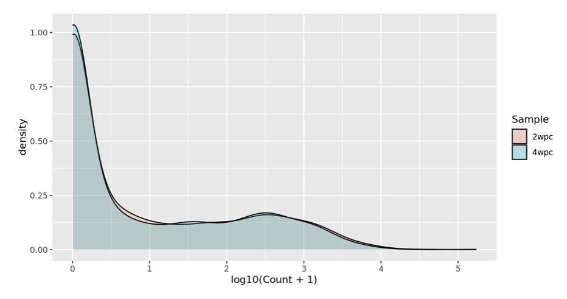
Excercises
- Please explore your bam files with IGV. What do you find ?(Hint: download both .bam and .bai file —> open IGV browser —> click Genome > Mouse (GRCmm39mm39) —> click Tracks > Local Files > select the two files -> select proper coordinate (e.g., chr6:28,527,661-28,527,699))
- Please explore your count matrix of these two samples. Do you find any genes that express differentially between the samples? Also, think about that, if you are a project leader, how would you design your experiment and what hypothesis testing strategy would you opt for? (Note: Formal analysis will be revealed next week)
- (Optional) Please try to run the whole workflow that you learnt today on mouse chromosome 8. The reference genome sequence can be found at /vol/data/raw. However, you are encouraged to retrieve the reference genome from the databases by yourself.
Project: Cancer Hallmark and Metabolic Pathways in Cancer
Introduction
Tumor tissues are a complex mixture of distinct cell types. Cancer cells represent the most distinctive part of tissue. These are normal cells which have undergone an oncogenic event, such as for example copy-number variations, in which portions of chromosomes are duplicated a large number of times, or chromosomal fusions, in which several portions of chromosomes are fused together and might induce the high expression of so-called oncogenes. However, in some cancer types, these tumor cells only represent a small fraction of the tumor tissue. Other non-tumor cells contribute to the tumor micro-environment, such as immune cells (e.g. tumor infiltrating lymphocytes, or TILs) or stromal cells. These different cell types form a complex system in which multiple interactions (e.g. through cytokine signalling) take place and promote the tumor development.
Despite this complexity, and the very distinct feature of different tumors (liquid, solid, sarcomas, carcinomas,..), a number of common cellular principles have been described, which can be identified in all cancer types; these are the so called cancer hallmarks. A first description of 6 hallmarks was made by Hanahan and Weinberg in 2000, and updated and extended to four further characteristics by the same authors in 2011 (see references below).

These hallmarks represent cellular mechanisms by which the tumor cells acquire a growth advantage over normal cells and evade cellular mechanisms, such as immune surveillance, meant to suppress cancer cells. On the other hand, various metabolic process are being altered in cancer cells to adapt the cell to the changed micro-environment. The best known example of such a metabolic changes is the Warburg-effect, during which the cancer cell switch their energy production from an aerobe mode to an anaerobe-like mode, i.e. purely through glycolysis, even in the presence of oxygen (‘aerobe glycolysis’). However, in recent years, additional examples of the importance of metabolic changes in cancer have been described.
The activation of the 10 hallmarks can be detected by changes in the expression levels of certain genes that can be related to one or the other of these hallmarks or metabolic pathways. For example, angiogenesis, i.e. the development of new blood vessels in the tumor to provide nutrients, is induced by a number of well described genes such as EGFR, along with a number of other genes which promote this process.
The goal of this project is to perform a pan-cancer analysis of these cancer hallmarks and metabolic pathways, using datasets of genes expression data from a large collection of tumor samples. We will use the TCGA (The Cancer Genome Atlas) collection of RNA-seq data, across a large number of tumor types and patients (hence pan-cancer) and identify the activity of these hallmarks by using a collection of gene sets which describe the activity of these pathways. Then, each group in this project will focus on a specific cancer type and compare these hallmarks between the cancer samples and matched normal control.
Hence, you will be conducting (1) a pan-cancer analysis to compare tumor types amongst themselves (similar to the other groups in the project), and (2) a cancer specific analysis to compare normal to cancer cells in this tumor type.
The 5 sub-projects correspond to a different tumor type for the cancer specific analysis
- sub-project 1: BRCA = breast cancer;
- sub-project 2: KIRC = kidney renal carcinoma;
- sub-project 3: LUAD = lung adenocarcinoma;
- sub-prohect 4: PRAD = prostate adenocarcinoma;
- sub-project 5: THCA = Thyroid carcinoma
- sub-project 6: COAD = colon adenocarcinoma;
- sub-prohect 7: LIHC = liver hepatocarcinoma;
- sub-project 8: LUSC = lung small cell carcinoma
Objectives and workplan
The objectives of your project are the following:
- Identify cancer hallmark pathways: we have provided a first list of genesets, which have been curated from the literature; check those and identify in the literature additional (for example metabolic pathways) that are relevant to cancer, and collect the corresponding gene sets. For this, you can use the following databases:
- MSigDB: this is a very large collection of gene sets organized by categories; you can browse by keyword
- Gene Ontology: GO is a controlled vocabulary which describes all biological or molecular processed; you can query bey keyword, and then extract the genes which are annotated to this term (make sure to select the right organism!)
- KEGG: Comprehensive database of biological pathways
- Pathway Commons: this is a very large database of pathways from which gene sets can be obtained
- Compare gene sets: make a comparison of the cancer hallmarks gene sets and the selected metabolic gene sets; how many shared genes are there between these gene sets?
- a compiled list of hallmark related datasets are provided (see dataset section); bring your metabolic pathways into a similar format
- find a way to compare all these datasets, in order to identify groups of datasets with shared genes (identify a suitable metric to quantify the distance or similarity between 2 sets!)
- display this comparison using a graphical representation
- Perform a pan-cancer analysis: determine the expression profiles of these gene sets across all TCGA tumor datasets, and determine patterns and clusters of tumor samples
- a data frame of expression values for many cancer samples is provided (see dataset section);
- start with one pathway, and check the expression of the genes of this pathway compared to all genes for one sample; how could you summarize this into one number? This would represent the activity of this pathway in this sample
- compute the activities of all pathways for all samples, and display this in an appropriate way
- how can you identify patterns and clusters of samples / pathways?
- compare this with the clinical informations provided in the datasets; can you find associations with specific clinical variables?
- Compare Tumor to normal tissue through a focused analysis: perform a differential analysis for the select tumor type between normal tissue and tumor tissue
- for the tumor type you selected, repeat a similar analysis as in (3) in tumor and normal samples
- test which pathways have a significant different activity between the normal and tumor samples
- Predict pathway activities using a regression model: predict the activity of a metabolic pathway using the other hallmarks/metabolic pathways as explanatory variables
- select one pathway of interest
- can you build a linear regression model to determine the activity of this pathway from the other pathways? Make sure to take into account the analysis performed in (2) !
Alternatively, you can try to perform a logistic regression model to perform a binary classification tumor vs. normal based on the activity of the pathways.
All these analysis steps should be summarized in a R markdown document, with appropriate description and graphical outputs!
Description of datasets
We have stored 4 datasets onto a public platform, figshare. These datasets represent
a data frame containing the gene expression data from RNA-seq for almost 10,000 TCGA cancer patients, representing 33 different tumor types; you can download the R-object
tcga_tumor_log2TPM.RDS(beware, almost 1 Gb!) using this link: https://figshare.com/s/3c2bf4d766181a17a2e0a data frame with 37 clinical annotations for all TCGA samples present in the full data matrix; you can download the R-object
tcga_tumor_annotation.RDSusing this link : https://figshare.com/s/eed44ff6fdcf451cebd9a R object containing, for 8 tumor types, the expression data of matched tumor and normal tissue; you can download this object
GKBioinfo_tumor_normal.rdsusing this link https://figshare.com/s/5bd4cf0fc7a0af36b767a R object, containing a list of gene sets for the cancer hallmarks and additional pathways; you can download the object
hallmarks_genesets.rdsusing this link https://figshare.com/s/4f917a4f41e90027dd6f
Once you have downloaded these 4 files, load them as below (make sure to replace the path/to/your/directory/ part with the path to the location on your computer where you have stored the files!):
tcga_exp = readRDS("path/to/your/directory/tcga_tumor_log2TPM.RDS")
tcga_annot = readRDS("path/to/your/directory/tcga_tumor_annotation.RDS")
tcga_tumor_norm = readRDS("path/to/your/directory/tcga_tumor_normal_datascience_proj_2020.RDS")
genesets = readRDS("path/to/your/directory/hallmarks_genesets.rds")The first 2 objects are data frames
The third object is a list with 5 entries corresponding to 5 tumor types (BRCA = breast cancer; KIRC = kidney renal carcinoma; LUAD = lung adenocarcinoma; PRAD = prostate adenocarcinoma; THCA = Thyroid carcinoma); each entry of the list is itself a list with 3 entries, corresponding to (1) a data frame with expression values for tumor samples, (2) a data frame with expression values for normal samples from the same patients, (3) a data frame with clinical annotations for these patients.
Hence, if you want to access the expression matrix for tumor samples and normal sample for LUAD for example, you can do it through:
luad = tcga_tumor_norm[["LUAD"]]
luad.tumor = luad[["tumor"]]
luad.norm = luad[["normal"]]
luad.annot = luad[["clinical"]]
dim(luad.tumor)
[1] 19624 58
dim(luad.norm)
[1] 19624 58
dim(luad.annot)
[1] 58 37The last object is again a list
class(genesets)
[1] "list"
names(genesets)
[1] "genesets" "description"
names(genesets$genesets)
[1] "Angio_AACR" "Angio_ALL" "Angio_VEGF"
[4] "Angio_N_Reg" "Angio_P_Reg" "Apop_AACR"
[7] "Apop_ALL" "Apop_SURVIVAL" "Genome_AACR"
[10] "Genome_DN_Reg" "Genome_REPAIR" "Growth_AACR"
[13] "Growth_ALL" "Growth_CONTACT_Inh" "Growth_Tumor_Supp"
[16] "Immune_AACR" "Immune_ALL" "Immune_UP"
[19] "Immune_DN" "Immune_Ils" "Inflam_AACR"
[22] "Inflam_PRO" "Inflam_NEG" "Meta_AACR"
[25] "Meta_Glc" "Meta_Gln" "Meta_Chol"
[28] "Meta_FA" "Meta_HIF1" "Metas_AACR"
[31] "Metas_ALL" "Metas_EMT_MMP" "Metas_NEG"
[34] "Metas_EMT" "Prol_AACR" "Prol_EGFR"
[37] "Prol_MAPK" "Prol_PI3CK" "Prol_NOTCH"
[40] "Prol_ERK" "Prol_RAS" "Prol_JAK_STAT"
[43] "Prol_MTOR" "Prol_WNT" "Replication_AACR"
[46] "Replication_Telomerase"
## these are the first genes of the first geneset
head(genesets$genesets[[1]])
[1] "AAMP" "ACTA2" "ACVR1" "ACVRL1" "ADGRG1" "ADM"
## the element description contains a description of the genesets
head(genesets$description)
[1] "na" "all angiogenesis inducing genes"
[3] "VEGF pathway" "negative regulators of angiogenesis"
[5] "positive regulators of angiogenesis" "na" Literature review
This list is meant as a starting point for your literature research; you should not restrict yourself to this list only!
Reviews on general cancer biology and cancer metabolism
- Cancer biology - Hanahan, Douglas, and Robert A. Weinberg. “Hallmarks of cancer: the next generation.” cell 144, no. 5 (2011): 646-674. https://doi.org/10.1016/j.cell.2011.02.013
- Cancer metabolism - De Berardinis, R. J., & Chandel, N. S. (2016). Fundamentals of cancer metabolism. Science Advances, 2(5). https://doi.org/10.1126/sciadv.1600200
- Cancer metabolism - Pavlova, Natalya N., and Craig B. Thompson. “The emerging hallmarks of cancer metabolism.” Cell metabolism 23, no. 1 (2016): 27-47.https://doi.org/10.1016/j.cmet.2015.12.006
Analysis of cancer hallmarks across multiple cancer types using integrative approches
- Cancer immunology - Thorsson, Vésteinn, David L. Gibbs, Scott D. Brown, Denise Wolf, Dante S. Bortone, Tai-Hsien Ou Yang, Eduard Porta-Pardo et al. “The immune landscape of cancer.” Immunity 48, no. 4 (2018): 812-830. https://doi.org/10.1016/j.immuni.2018.03.023
- Cancer metabolism - Peng, Xinxin, Zhongyuan Chen, Farshad Farshidfar, Xiaoyan Xu, Philip L. Lorenzi, Yumeng Wang, Feixiong Cheng et al. “Molecular characterization and clinical relevance of metabolic expression subtypes in human cancers.” Cell reports 23, no. 1 (2018): 255-269. https://doi.org/10.1016/j.celrep.2018.03.077
- Cancer stemness/de-differenciation Malta, Tathiane M., Artem Sokolov, Andrew J. Gentles, Tomasz Burzykowski, Laila Poisson, John N. Weinstein, Bożena Kamińska et al. “Machine learning identifies stemness features associated with oncogenic dedifferentiation.” Cell 173, no. 2 (2018): 338-354. https://doi.org/10.1016/j.cell.2018.03.034
- DNA damage in cancer - Knijnenburg, Theo A., Linghua Wang, Michael T. Zimmermann, Nyasha Chambwe, Galen F. Gao, Andrew D. Cherniack, Huihui Fan et al. “Genomic and molecular landscape of DNA damage repair deficiency across The Cancer Genome Atlas.” Cell reports 23, no. 1 (2018): 239-254. https://doi.org/10.1016/j.celrep.2018.03.076
- RAS signalling Cancer - Way, Gregory P., Francisco Sanchez-Vega, Konnor La, Joshua Armenia, Walid K. Chatila, Augustin Luna, Chris Sander et al. “Machine learning detects pan-cancer ras pathway activation in the cancer genome atlas.” Cell reports 23, no. 1 (2018): 172-180. https://doi.org/10.1016/j.celrep.2018.03.046
How to score pathways ?
Reimand, Jüri, Ruth Isserlin, Veronique Voisin, Mike Kucera, Christian Tannus-Lopes, Asha Rostamianfar, Lina Wadi et al. “Pathway enrichment analysis and visualization of omics data using g: Profiler, GSEA, Cytoscape and EnrichmentMap.” Nature protocols 14, no. 2 (2019): 482-517. https://doi.org/10.1038/s41596-018-0103-9
Paczkowska, Marta, Jonathan Barenboim, Nardnisa Sintupisut, Natalie S. Fox, Helen Zhu, Diala Abd-Rabbo, Miles W. Mee, Paul C. Boutros, and Jüri Reimand. “Integrative pathway enrichment analysis of multivariate omics data.” Nature communications 11, no. 1 (2020): 1-16. https://doi.org/10.1038/s41467-019-13983-9
Jia, Dongya, Mingyang Lu, Kwang Hwa Jung, Jun Hyoung Park, Linglin Yu, José N. Onuchic, Benny Abraham Kaipparettu, and Herbert Levine. “Elucidating cancer metabolic plasticity by coupling gene regulation with metabolic pathways.” Proceedings of the National Academy of Sciences 116, no. 9 (2019): 3909-3918. https://doi.org/10.1073/pnas.1816391116
How to structure your project
Project
You project MUST contain the following elements: - descriptive statistics about the datasets - graphical representations - dimension reduction analysis (PCA, clustering or k-means) - statistical tests (t-test, proportion tests etc) - linear/logistic regression analysis, either uni- or multivariate
Data cleanup
You will be analyzing multiple genomic data sets together. It is essential that you explore each dataset and clean it. Cleaning can refer to many things:
- Removing missing values
- Imputing missing values
- Removing low variance columns/rows
- Removing batch effects
- Removing outlier samples (only if it is due to technical issues !!)
- Making sure that data is in the correct format, for example, numbers should be encoded as numeric and not as characters. Categorical variables should be factors etc.
- Re-ordering rows/columns in meaningful and useful ways
Data exploration
Now that you have cleaned data, explore your data to understand its structure. Perform basic exploratory data analysis.
- Look at the distribution of the overall data, specific samples or features.
- Visualize the data distribution
- Visualize the inter-dependencies among specific samples/features of interest
- Check some of your hypothesis like - is something high/low between two conditions etc
Data reduction
You have a high dimension matrix, that is, you have way more features (~25000 genes) than observations.
- Try out methods to reduce the dimensionality of this data.
- Cluster your samples to identify similar and dis-similar groups
- Check how well the groups separate based on the features of your interest
Project report guide
At the end of this course, you will have to produce a report in RMarkdown. RMarkdown is an inherantly ready-to publish format. Meaning that if there are no mistakes on your text, it should simply produce a PDF in one go. Let’s see how.
Knitting
Create a new RMarkdown document and start trying it out. You can already call this document Report if you would like to. You can also use a layout we have made available here.
By clicking on the little blue yarn ball on top, you can Knit the document into a PDF (to PDF option can be found on the right drop arrow).
Tips to ensure you catch errors early on:
- Knit your document every so often! If you have too much code/text that you have not verified if it’s running or not, this might cause issues later on.
- Read your errors when you have them: R will usually tell you where the error is located. Most times it’s a character error as some characters will have meanings in RMarkdown and that is not always clear at first.
- Check for missing dependencies like
dplyr,tidyr, orggplot2if you are using these packages. - Comment your code!
- Keep things short, simplify, and avoid having a wall of text/code that is hardly decipherable.
Formatting
New chapter titles and subtitles are defined from # (larger title as in 1.) to #### (smaller title as in 1.1.1.1). Further formatting can be found here.
Numerical equations and special characters have their own formatting. For example: $\sqrt{13}$ is square-root of 13 $\alpha=0.05$ is alpha=0.05
Here is an equation:
\begin{equation}
f\left(k\right) = \binom{n}{k} p^k\left(1-p\right)^{n-k}
(\#eq:binom)
\end{equation}\[\begin{equation} f\left(k\right) = \binom{n}{k} p^k\left(1-p\right)^{n-k} (\#eq:binom) \end{equation}\]
You may refer to this equation using \@ref(eq:binom).
Chunk options
There are a multitude of options to display the R chunks and their outputs. See all of them here. The ones will will most likely use are:
echo=FALSE: hides the code but not the resultsresults='hide': hides the results but not the codeinclude=FALSE: does not include the chunkeval=FALSE: does not run the chunk
Some of the ones below control figure placement and size:
fig.heightfig.widthfig.align='center'out.widthExtra:results='hold', out.width='50%': will allow you to show 2 figure/plot outputs side by side.
External images
When including external images, you need to indicate the location of such figure relative to your document: 

For more additions like table, check the RMarkdown cookbook.
Figures and tables with captions can also be cross-referenced from elsewhere using \@ref(fig:chunk-label) and \@ref(tab:chunk-label), respectively.
Don’t miss Table @ref(tab:nice-tab). Reference tables using \@ref(tab:nice-tab)
| temperature | pressure |
|---|---|
| 0 | 0.0002 |
| 20 | 0.0012 |
| 40 | 0.0060 |
| 60 | 0.0300 |
| 80 | 0.0900 |
References
Your report will very likely include some references. Each RMarkdown is accompanied by a .bib extension file. Indicate the name of that file in the beginning of the report (see example). You can see the one we have included in the example here too. If you open that file in a text editor, you can see that entries are structured like this:
@book{ggplot2,
author = {Hadley Wickham},
isbn = {978-3-319-24277-4},
publisher = {Springer-Verlag New York},
title = {ggplot2: Elegant Graphics for Data Analysis},
url = {https://ggplot2.tidyverse.org},
year = {2016},
bdsk-url-1 = {https://ggplot2.tidyverse.org}}This citation format is compatible with citation managers like BibDesk (only available on macOS) or Mendeley. When you are using one of these, you are able to add in other references. Watch out for the reference key in your Markdown.